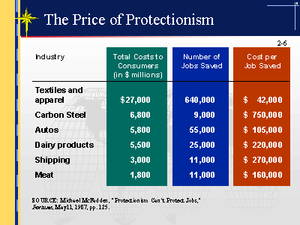

Александр Куряев. Международная торговля
История международной торговли. Теория международной торговли. Протекционизм.
1. Введение
Нет ни одного раздела экономической науки, где бы выводы и рекомендации теории столь разительно противоречили преобладающей экономической политике, как это имеет место в теории международной торговли и внешнеторговой политике современных государств.
Со времен Адама Смита большинство экономистов являются сторонниками свободной торговли. Во второй половине XIX в. доля сторонников свободной торговли среди экономистов достигала практически 100 процентов. Единичные экономисты, обосновывающие отдельные исключения из общего принципа всеобщей выгодности свободной торговли, подвергались остракизму в профессиональной среде. Характерна история, рассказываемая про Альфреда Маршалла -- одного из ведущих экономистов конца XIX -начала ХХ веков. Он разработал графический метод анализа проблем международной торговли, повсеместно принятый в настоящее время. В одном из личных писем он сообщал адресату письма, что подумывает над тем, чтобы отказаться от этого метода, так как из него следует, что тарифы в определенных условиях бывают выгодны вводящей их стране (а следовательно, по его мнению, этот метод ошибочен).
Другим ярким примером отношения экономистов проблемам международной торговли является известное письмо в Конгресс, подписанное 1028 американскими экономистами, против принятия в 30-х гг. Акта Смута--Хоули, резко поднимающего американские импортные пошлины. В настоящее время общепризнанно, что этот Акт был одним из факторов, сделавших депрессию, последовавшую за кризисом 1929 г., Великой.
В результате одного современного (1984 г.) опроса экономистов различных странах выяснилось, что 95 процентов экономистов в США (и 88 процентов экономистов в США, Австрии, Франции, Германии и Швейцарии) разделяют (полностью или с оговорками) утверждение, что "пошлины и импортные квоты понижают общее экономическое благосостояние".
Несмотря на это, протекционизм в мире процветает. Снижение уровня тарифного протекционизма после Второй мировой войны сменилось практикой нетарифного протекционизма. Почему-то в этой области политики и общественное мнение не разделяют общих выводов экономической науки.
Таким образом, современный протекционизм никак не связан с выводами экономической науки. Однако и в самой науке не все ладно.
После Адама Смита и Давида Рикардо в экономической науке господствующее место занял вывод о выгодности политики свободной торговли для всех сторон обмена. Что даже теоретически не существует ситуаций, в которых протекционистские пошлины были бы чем-то выгодны вводящей их стране.
На протяжении 200 лет не прекращались попытки опровергнуть эту теорию в целом, но из этого ничего не вышло. Противники были вынуждены признавать верность положения о выгодности свободной торговли в целом, при этом пытаясь доказать выгодность протекционистских мер в отдельных специфических случаях. Даже знаменитый проповедник теории тарифной защиты новых отраслей промышленности Фридрих Лист в целом являлся сторонником свободы торговли.
Поэтому приведенные выше цифры о проценте современных экономистов, являющихся противниками протекционизма, вызывает некие подозрения относительно современного состояния этого раздела экономической науки. Из этих цифр следует, что как минимум пятая часть европейских экономистов просто-напросто прямо считает, что применение пошлин и квот может быть выгодным. И кроме того, нам неизвестно, сколько из оставшихся придерживается мнения о безусловной выгодности свободной торговли, а сколько -- лишь с оговорками и какие это оговорки.
Таким образом, судя по всему в экономической науке произошел некий сдвиг в сторону размывания безусловности утверждения о выгоде свободы торговли. И действительно, современные учебники по теории международной торговли это подтверждают. Вот цитата из одного из недавно (1999 г.) вышедших учебников:
"Можно заключить, что экономическая аргументация в пользу свободой торговли подробно разработана и основана на интерпретации результатов, полученных во всей совокупности теорий торговли, появлявшихся в течение последних двух или трех веков. Однако из этих теорий не следует, что политика свободной торговли выгодна для всех индивидов во всех ситуациях. Напротив теория показывает, что существуют веские аргументы в поддержку как свободной торговли, так и протекционизма. Выбор между ними требует тщательной оценки всех "за" и "против" каждого режима.
Представленная здесь аргументация в пользу свободной торговли признает, что свободная торговля может не всегда быть оптимальным способом максимизации экономической эффективности. Признается также, что свободная торговля может не привести к наиболее предпочтительному распределению доходов. Однако несмотря на эти теоретические возможности, остается неясным и более того маловероятным, что протекционизм может достичь поставленных целей".
Несмотря на все оговорки, автор резюмирует современное состояние теории международной торговли следующим образом:
"большинство экономистов сходятся на том, что свободная торговля может не быть ``технически оптимальной'' политикой, но при этом остается "прагматически оптимальной". Т.е. в условиях недостатка информации и проблем, присущих любой системе выборочного протекционизма, свободная торговля остается политикой вероятнее всего приводящей к максимально достижимому уровню экономической эффективности".
Как говорится, спасибо и на этом. Но насколько же это контрастирует с выводами классической теории международной торговли! Для наглядности в следующей ниже таблице приводится сравнение выводов классической и современной теорий международной торговли.
|
Выводы классической теории международной торговли |
Выводы современной теории |
|
1. Свобода торговли позволяет каждой стране извлекать максимальную выгоду из международного разделения труда (независимо от того какую политику проводят ее торговые партнеры). |
1. Главным аргументом в пользу свободной торговли является то, что проведение политики свободной торговли повышает агрегированную экономическую эффективность. |
|
2. Обоюдовыгодная торговля (т.е. разделение труда) будет существовать даже в том случае, если одна страна эффективнее другой в производстве всех товаров. |
2. Страна может выиграть от свободы торговли даже если любое производство на ее территории менее эффективно, чем во всех остальных странах. |
|
3. Более одаренному региону выгодно сконцентрировать свои усилия на производстве тех товаров, где его превосходство выше, и оставить менее одаренному региону производство тех изделий, где его превосходство меньше. Т.е. стране выгоднее оставлять более благоприятные внутренние условия производства неиспользованными и покупать товары, которые могли бы быть на них произведены, в регионах, где условия их производства менее благоприятны. |
3. Отечественный производитель может проиграть международную конкуренцию, даже если он является самым эффективным производителем в мире. |
|
4. В мире, организованном на основе принципа разделения труда, любое изменение должно тем или иным образом затронуть краткосрочные интересы многих групп. И это не связано исключительно с международной торговлей (и не является оправданием протекционистских мер). |
4. Теория международной торговли показывает, что в условиях свободной торговли некоторые люди могут нести убытки. |
|
5. Даже если все остальные страны придерживаются протекционизма, интересам любой страны лучше всего соответствует свобода торговли. |
5. Односторонняя свобода торговли может не быть наилучшей политикой, когда другие страны воздвигают торговые барьеры. |
|
6. Не существует условий, когда протекционизм может принести какие-либо выгоды стране. |
6. Протекционизм может быть выгоден стране. |
|
7. В то время как государство не может посредством вмешательства в хозяйственную деятельность сделать своих граждан более процветающими, оно, безусловно, имеет достаточно власти, чтобы сделать их менее удовлетворенными посредством ограничения производства. |
|
|
8. Выгоды, извлекаемые из внешней торговли, целиком и полностью заключаются в импорте. Экспорт - всего лишь оплата импорта. Если бы имелась возможность осуществлять импорт, ничего не экспортируя, то страна-импортер наслаждалась бы процветанием. |
Что же произошло с теорией международной торговли и когда? Один из ведущих мировых авторитетов в области международной торговли, фундаментальный учебник которого переведен и на русский язык, Пол Кругман в недавней статье перечислил основные "Большие Идеи", лежащие в основе теории международной торговли:
· Теория сравнительных издержек
· Определение условий торговли взаимным спросом
· Соотношение между изобилием и интенсивностью факторов производства в торгующих странах
· Связь между внутренними искажениями и внешнеторговой политикой
· Произвольная специализация, обусловленная возрастающей отдачей.
Первые два пункта полностью относятся к классической школе. Теория, обозначенная в третьем пункте, разработана в 30-е годы и стала основой современной теории международной торговли, "потеснив" теорию сравнительных издержек Рикардо. Правда, как показывают эмпирические исследования, ее объясняющий потенциал неспособен рационально интерпретировать значительную часть современной статистики международной торговли (в этом отчасти виновата и сама статистика), так что многие склонны вообще отказаться от нее.
Четвертый пункт по своей сути антипротекционисткий. Его смысл в том, что внутренние так называемые "дефекты" рынка и искажения уместнее "исправлять" не методами внешнеторговой политики (т.е. проще говоря пошлинами), а внутренними же мерами -- налогами, субсидиями и т.п. А меры внешнеторговой политики в этом деле не решают поставленных задач.
Последний пункт не связан с проблемами свободной торговли и протекционизма. Это просто одно из наиболее громких "открытий" 80-х годов, приведшее к возникновению целой "новой теории торговли". Однако с ней произошел весьма красноречивый конфуз, о котором несколько ниже.
Итак, мы видим, что со времен классической школы не появилось никаких принципиально новых "Больших Идей". Основой остается старая добрая теория сравнительных издержек Джеймса Милля--Торренса--Рикардо.
Откуда же тогда появился этот дрейф современной теории к признанию теоретической целесообразности протекционистских мер, пусть и в строго определенных случаях и по сути дела нереализуемых на практике?
Конфуз, произошедший с "новой теорией торговли", способен пролить некоторый свет на эту загадку.
Дело в том, что увеличивающаяся отдача как фактор международного разделения труда и один из источников торговли была в явном виде сформулирована еще в начале 30-х гг. (при том, что и экономисты классической школы не обходили его стороной) и не где-нибудь, а в трактате, заложившем основы современной стандартной модели международной торговли: Олин. "Теория межрегиональной и международной торговли". Почему же это было обнаружено только после громогласного и триумфального бума "новой теории" в 80-х гг. ХХ века?
Оказывается современные экономисты, специализирующиеся на изучении теории международной торговли, не знакомы с первоисточниками.
В 40--50-е гг. экономическая теория претерпела радикальную трансформацию -- она была переведена на язык математики. Одним из главных переводчиков выступил Пол Самуэльсон. Именно Самуэльсон изложил в виде математической модели суть взглядов Олина (и его учителя Хекшера) -- получилась теорема Хекшера--Олина, с изучения которой (после краткого упоминания о теории сравнительных издержек Рикардо) начинается любой современный курс по теории международной торговли.
По каким-то причинам Самуэльсон проигнорировал аргумент возрастающей отдачи. То ли потому, что он не был у Олина главным, то ли потому что в то время имеющиеся математические методы не позволяли его формализовать.
Как бы то ни было, автор повторного "открытия" аргумента возрастающей отдачи, уже упомянутый Пол Кругман, готовясь к какой-то мемориальной лекции, посвященной Олину, вдруг обнаружил, что Олин-то об этом давно написал.
Вот что написал Кругман по этому поводу в 1999 г.:
"Позвольте мне начать с несколько компрометирующего признания: до того, как я начал работать над этой статьей, я не читал книгу Олина "Межрегиональная и международная торговля". Я подозреваю, что мой случай не является чем-то выдающимся: у современных экономистов, обученных мыслись на языке жестких формальных [математических] моделей, как правило не хватает терпения продираться сквозь словесное изложение более расслабленных эпох. В той мере, в какой мы интересуемся историей идей [sic! -- А.К.], мы полагаемся на переводчиков, на переходные фигуры такие, как Пол Самуэльсон, которые извлекли модели из литературных усилий их предшественников. И позвольте мне заметить, что чтение Олина в оригинале удовольствие не из приятных: экономист с подготовкой Массачусетского технологического института во мне нетерпеливо ерзал, интересуясь, когда автор перейдет к сути дела -- т.е. к тому ядру его прозрений, на основе которого были разработаны модели".
Таким образом, среди современных математических экономистов нет никого, кто читал бы первоисточники по своей узкой специализации. И ведь речь идет о произведении 30-х гг. XX века. Что уж говорить о более ранних авторах. Ведь классическая теория в последний раз в завершенном виде была изложена в работе американского экономиста Тауссига в 1927 г. А два других комплексных изложения этой теории (Кэрнса и Бастебля) вообще датированы XIX веком. Сейчас ими интересуются только историки экономической мысли.
Вот и разгадка. Анализ классической школы просто неизвестен современным экономистам. Ведь тот же Кругман успел подготовить не один выпуск экономистов. А то, что неизвестно учителю, не может быть известно ученикам.
Выводы современной теории международной торговли получены с помощью разработанного Маршалом графического аппарата и моделей Самуэльсона. А как мы уже упоминали, был момент, когда Маршалл в отчаянии хотел отказаться от своих разработок.
Цена моделям Смуэльсона становится понятна из следующей истории. Как-то Самуэльсона пригласили прочитать показательную лекцию в одном университете. Он начал излагать законы спроса и предложения на основе модели рынка гамбургеров. Один из слушателей заметил: "Позвольте, но рынок гамбургеров функционирует совершенно не так". На что мэтр ответил: "Меня не интересует, как функционирует рынок гамбургеров. Меня интересует непротиворечивость математической модели".
Таким образом, подводя итог, можно констатировать, что современная теория страдает некой амбивалентностью, предъявляя аргументы как в пользу проведения политики свободной торговли, так и протекционизма. При этом никогда не было показано, в каких аспектах ошибалась классическая теория международной торговли, утверждавшая безусловную выгодность свободной торговли для всех участников.
2. Экономический анализ международной торговли: от автаркии к свободе торговли, инвестиций и миграции
Разделение труда (и его двойник -- человеческое сотрудничество) является фундаментальным общественным явлением.
Опыт учит человека, что объединенные усилия более эффективны и производительны, чем изолированная деятельность самодостаточных индивидов. Некоторые естественные обстоятельства, определяющие жизнь и деятельность человека, приводят к тому, что разделение труда увеличивает выработку на единицу затраченного труда. Эти естественные обстоятельства заключаются в следующем.
Первое: врожденное неравенство способностей людей к различным видам труда.
Второе: неравномерное распределение по поверхности земли природных, не связанных с человеком возможностей производства.
Таким образом, разделение труда является результатом сознательной реакции человека на множественность природных условий.
Если бы сила и способности каждого, так же как и внешние условия производства, были везде одинаковыми, идея разделения труда никогда бы и не возникла. Сам по себе человек никогда бы не додумался до того, чтобы облегчить себе борьбу за существование сотрудничеством и разделением труда. Общественная жизнь не смогла бы возникнуть у людей с одинаковыми от природы способностями в мире, наделенном географическим однообразием.
Наиболее очевидным доводом в пользу свободной торговли является тот факт, что различные страны имеют различные абсолютные преимущества в производстве товаров. Так, например, ввиду различий в климате и почве Россия более приспособлена для для выращивания пшеницы, чем Бразилия, тогда как Бразилия, в свою очередь, имеет более оптимальные условия для производства кофе. Очевидно, что для обеих стран выгоднее, когда в России выращивается пшеница, часть которой обменивается на часть производимого в Бразилии кофе.
Однако здесь возникает два вопроса:
1. Означает ли это, что страна, имеющая абсолютное преимущество в производстве определенного товара, обязательно будет производить и экспортировать этот товар в рамках международного разделения труда?
2. Что произойдет, если производство всех товаров окажется более эффективным в одной из стран, а другая будет уступать первой по всем показателям эффективности производства всех товаров. Возможна ли взаимовыгодная торговля между этими странами? Или вторая страна будет исключена из международного разделения труда и обречена прозябать на задворках цивилизации, полагаясь лишь на собственные весьма скудные ресурсы?
Современная теория международной торговли показывает (основываясь на теории сравнительных преимуществ Джеймса Милля--Торренса--Рикардо), что в этих условиях возможны обоюдовыгодное разделение труда и международная торговля, основанные на сравнительных преимуществах: каждая страна обращается к тем отраслям производства, для которых ее условиями предоставляются пусть не абсолютно, но хотя бы сравнительно самые благоприятные возможности. Для жителей страны, в которой условия производства всех товаров более благоприятны, чем в других странах, будет разумно воздержаться от эксплуатации некоторых возможностей, которые -- абсолютно и технологически -- более благоприятны, и импортировать товары, произведенные за рубежом в условиях -- абсолютно и технологически -- менее благоприятных, чем неиспользованные местные ресурсы.
Отсюда следует ответ на первый вопрос: не всегда страна будет экспортировать товар, в производстве которого она обладает абсолютными преимуществами. Фактором, который определяет, что выгоднее -- производить товар или ввозить его, является сравнительное преимущество.
Учение классической школы о международной торговле было сформулировано для специфических условий немобильности труда и капитала между странами, каждое из которых не выполнялось на отдельных исторических отрезках. Например, во второй половине XIX был короткий период, когда географическое перемещение и товаров, и всех факторов производства можно было считать свободным. Затем последовательно была ограничена миграция (в конце XIX в.), свобода торговли товарами (начиная с последней трети XIX в.) и, наконец, после Первой мировой войны произошел коллапс международного рынка капитала. В настоящее время большинство стран декларирует приверженность идее свободной торговле товарами и иностранных инвестиций. (Хотя слова часто расходятся с делами и протекционизм до сих пор является серьезным препятствием.) С другой стороны, свобода миграции, как с целью постоянной смены места жительства, так и временная трудовая миграция, жестко ограничена. Учение классической теории международной торговли дает возможность исследовать проблемы, порождаемые любыми допущениями (читай: ограничениями), которые только можно вообразить.
2.1. Автаркия
Автаркия, или экономическая самодостаточность, -- это положение дел, при котором вообще нет никакой внешней торговли; каждая страна потребляет только то, что произведено в пределах ее границ.
В условиях автаркии люди жили фактически до начала--середины XIX века. Тогда причиной были не только высокие транспортные издержки, ограничивающие рынок только ближайшей округой, но и внутренние -- фискальные -- таможни.
В 1707 г. уничтожены таможни между Англией и Шотландией и образовалась граница Великобритании, а в 1823 г. уничтожены были и заставы, отделявшие Великобританию от Ирландии.
Французская революция, для которой привилегированные провинции являлись таким же злом, как привилегированные сословия, завершила таможенное объединение Франции в 1790 г., упразднив всякого рода внутренние таможни как внутри провинций, так и на границе их. В следующем году появился впервые общий для всей Франции таможенный тариф, применяемый при провозе товаров через государственную границу.
Австрия не знала общей государственной торговой и таможенной политики вплоть до 1775 г., когда был издан общий для всех немецких областей Австрии таможенного тарифа
В Германии еще в 1790 г. насчитывалось около 1800 различных таможенных границ. В 1803 г. Германия имела еще целых 300 монархов, а каждый из монархов имел собственные таможни. В одной только Пруссии находим 67 местных тарифов и столько же таможенных границ; на пути между Дрезденом и Магдебургом (256 км) путешественник встречал 16 застав. Пруссия в 1818 г. заменила все 67 местных тарифов одним общим, действующим на границе государства.
Но для торговли этого еще было далеко не достаточно: даже после такого объединения отдельных территорий таможен оставалось слишком много. Германия "хрипела под игом 38 монархов", как говорил Гейне: для каждого из них территория его соседей, иногда самых крохотных размеров, находилась в таможенном отношении за границей. Лишь в 50ѕ60-х г. XIX в. Германия превратилась в хозяйственном отношении в единое целое, простирающееся до моря.
Италия, которая еще в 40ѕ50-х гг. XIX в. была разбита на ряд мелких самостоятельных территорий, с самостоятельными границами, пошлинами и заставами. Все выгоды свободы передвижения, все благотворные результаты новой техники проходили мимо Италии, не знавшей еще национальной территории, национальной хозяйственной политики. Лишь в 1859 г., когда произошло политическое объединение Италии, образовавшееся единое государство устранило и экономическую обособленность отдельных частей его.
Швейцарские кантоны до 1848 г. были отделены заставами друг от друга. Только в этом году таможенное законодательство перешло к швейцарскому союзу, и последний упразднил кантональные и не исчезнувшие еще окончательно речные, мостовые и дорожные сборы и ввел общий для всей страны пограничный таможенный тариф. Окончательно таможенное единство установилось в 1874 г. [Кулишер И. М. Основные вопросы международной торговой политики. М., Челябинск: Социум, 2002. С. 17--21.]
Внутренние таможни ограничивали эффективность наиболее дешевого средства транспортировки -- по естественным водным путям.
Перевозка по рекам была значительно дешевле, чем гужевой транспорт (вероятно, втрое дешевле), но к самым расходам провоза присоединялись еще разные пошлины, которые здесь были еще многочисленнее, чем на суше. На Роне сборы взимались на 31 таможне, на Луаре их имелось целых 75. У каждой заставы суда вынуждены были останавливаться, выжидать открытия таможни, подвергаться осмотру и придиркам всякого рода со стороны служащих, которые не вывешивали тарифа сборов и, пользуясь незнакомством с ним лодочников, брали свыше установленной суммы, не выдавали квитанций, утаивали полученные деньги.
Сборы эти превышали обычно фрахт, составляя нередко 2/3 закупочной цены товара и даже 3/4 общей суммы издержек по доставке товара. Из 30 ливров, в которые обходилась перевозка товара из Лиона в Оксонн, 2 ливра 4 су приходилось на нагрузку и разгрузку, производимую несколько раз, 4 ливра 13 су на фрахт и целых 23 ливра 3 су на таможенные сборы. К концу XVIII в. товар, закупленный за 12 ливров, обходился в месте назначения, находившемся на небольшом расстоянии от места приобретения, в 27 ливров 6 су. Это соответствует утверждению современника, что эти сборы настолько обременяют торговлю как вследствие их огромного числа, так и по причине произвольного и неумеренного взимания их, что часто они утраивают расходы водного транспорта. Вследствие этого последнему нередко предпочитали перевозку по суше, несмотря на большую дороговизну фрахта в этом случае. [Кулишер И. М. История экономического быта Западной Европы. Т. II. Челябинск: Социум, 2004. С. 405--406.]
Не удивительно, что еще в начале XIX в. удовлетворение повседневных потребностей широких масс людей не сильно зависело даже от внутреннего разделения труда, не говоря уже о международном. Импортировались в основном предметы роскоши. Даже если бы Наполеону удалось полностью воплотить мероприятия, предусмотренные в рамках Континентальной блокады, объявленной в 1806 г. и преследовавшей цель разрушить торговлю Англии с европейским континентом, это не оказало бы заметного влияния на уровень жизни подавляющего большинства населения Центральной и Западной Европы. Сельское население во многом жило натуральным хозяйством, а городское снабжалось сельскохозяйственной продукцией из ближайшей округи. Т.е. сами более или менее крупные политические образования были разделены на большое число в целом самодостаточных, в той или иной степени автаркичных регионов. Но причина была не только в высоких транспортных издержках, но и во внутренних торговых барьерах и неразумной фискальной политике.
Сформулированная физиократами -- первой школой экономической мысли -- политика laissez faire, построенная на принципах невмешательства во внутреннюю торговлю и производство и свободной конкуренции, разгромная критика меркантилисткой внешнеторговой политики такими экономистами XVIII в., как Давид Юм, Иеремия Бентам и, конечно, Адам Смит со своей книгой "Богатство народов", наконец, беспрецедентная агитация за отмену хлебных законов и свободу внешней торговли в Англии, создали условия для развития сложной сети международных экономических отношений. Именно они сделали возможной глубокую специализацию современного производства с сопутствующим совершенствованием технологии. Появившиеся в XIX в. пароходы и железные дороги, связали весь земной шар в единое целое.
Теперь для сохранения автаркии необходима было проведение сознательной и целенаправленной политики запрещения внешней торговли. Однако последствия такой политики в новых условиях -- когда весь остальной мир постепенно превращался в единое экономическое пространство -- были совершенно иными.
До начала Промышленной революции и постепенного складывания единого мирового хозяйства европейские страны по уровню жизни не слишком отличались от остального мира. Однако в XIX в. европейские страны благодаря проведению политики экономической свободы как внутри страны, так и в сфере международной торговли, добились уровня жизни, который прежде казался немыслимым даже для самых могущественных правителей. На этом фоне особо ярко выглядят печальные последствия политики автаркии. Одной из последних целенаправленных попыток в мировой истории законсервировать средневековые феодальные порядки, оградив народ от любого общения с внешним миром было правление сёгунов в Японии, закончившееся в середине XIX в. в результате столкновения как раз с новой западной цивилизацией.
До середины XIX столетия правление сёгунов (военных диктаторов) из рода Токугава на два с лишним столетия фактически отрезало Японию от внешнего мира. С 1636 г. сёгунат ввел смертную казнь для японцев, которые будут пойманы при попытке покинуть пределы страны. Японским купцам было дозволено торговать исключительно с голландцами и лишь на маленьком острове Дейджима неподалеку от Нагасаки. Этот двухвековой период стал известен как "Великий покой", в ходе которого японцы довольствовались весьма скромными успехами. Общая площадь обрабатываемых земель постепенно расширялась, однако без стимулирующего влияния внешнего мира экономика страны стагнировала. Методы производства в сельском хозяйстве или промышленности почти не изменились. Японцы оставались в неведении относительно промышленной революции, охватившей страны Западной Европы. Множество самых различных вещей, уже ставших привычными в Западной Европе, в Японии оставались неизвестны.
Кроме того, существовали и внутренние ограничения, которые не позволяли жителям одного региона вести торговлю с представителями других регионов. Основная цель здесь заключалась в том, чтобы разъединить людей и тем самым воспрепятствовать формированию политических союзов против власти сёгуна. Более того, японцы не могли свободно выбирать себе род занятий. Законы, регулирующие потребление, запрещали простым людям покупать такой предмет роскоши, как, например, шелк; ограничение размеров рынка и подобные законы гарантировали, что производство останется мелким, не имея возможностей накопить капитал для серьезного расширения своей деятельности.
Одно из непредвиденных последствий этих ограничений заключалось в том, что японцы не смогли извлечь сколько-нибудь существенных выгод из своего внутреннего рынка. Вынужденные обслуживать только местные рынки, японские компании были менее крупными и менее конкурентоспособными, нежели они могли бы стать в противном случае. Самым же худшим последствием становился голод, возникавший вследствие того, что ограничения мешали земледельцам с излишками урожая доставить зерно туда, где люди страдали от недорода. В стране все чаще вспыхивали восстания. Ограничения, наложенные властью на торговлю с целью укрепления режима, серьезно ослабили страну.
Вопреки усилиям сёгунов насадить в стране автаркию японцы проявляли интерес к внешнему миру. Некоторым удавалось бежать из страны на борту голландских торговых или американских китобойных судов. Тайно в Японию проникали голландские книги. Многие самураи продавали свои мечи, чтобы заполучить учебники голландского языка, стремясь таким образом прочесть голландские технические книги. Опираясь исключительно на знания, полученные из книг, любознательные японцы изготавливали перья для письма, чернила, химические и лечебные препараты. Любознательность усилилась после того, как англичане подвергли артиллерийскому обстрелу города Кагосиму и Симоносеки после нападений на их торговые суда. Народ Японии не нуждался в том, чтобы правительство распространяло сведения о внешнем мире; он нуждался в том, чтобы правительство не чинило препятствий и можно было бы учиться, не рискуя при этом собственной жизнью.
В середине XIX в., после того как Орегон и Калифорния стали частью США, Соединенные Штаты получили доступ к Тихоокеанскому бассейну. Люди заговорили о сооружении трансконтинентальной железной дороги. Активно развивалась торговля с Китаем и в этом контексте Япония выглядела подходящим местом для того, чтобы корабли могли пополнять здесь запасы угля и других ресурсов. Однако сёгун отказался обсуждать возможность расширения контактов с внешним миром. Американцам хватило нескольких военных кораблей, чтобы вынудить сёгуна пойти на переговоры и подписать торговый договор на американских условиях. Несмотря на то, что многие японцы испытывали ненависть к иностранцам, они не могли отрицать очевидного. Они были потрясены, открывая для себя, насколько далеко они отстали от Запада в вопросах коммерции, промышленности, образования, военной науки и многих других областях. Это открытие подвигло японцев на активные действия. [Подробнее о том, как японцам в короткий срок удалось наверстать упущенное см.: Пауэлл Дж. Как частное предпринимательство создало современную Японию // Маэстро бума. Уроки Японии. Челябинск: Социум, 2003. с. 75--100.]
Автаркия ведет к положению дел, при котором природные ресурсы страны не используются в той степени, в какой они бы использовались в случае существования свободной торговли. Для их разработки не хватает капитала, накопление которого происходит очень медленно. Соответственно процентные ставки находятся на высоком уровне. Производительность труда низкая, поэтому ставки заработной платы и уровень жизни также низки. Любой природный катаклизм ведет к возникновению голода.
2.2. Торговля товарами при немобильности
труда и капитала
Впервые целесообразность проведения политики свободной торговли была обоснована для ситуации торговли товарами, когда труд и капитал могут свободно перемещаться внутри каждой из торгующих стран, но не между ними. Именно для этих условий сформулирована и действительна знаменитая теорема сравнительных издержек Джеймса Милля--Торренса--Рикардо. Еще одним допущением являлось предположение о том, что эффективность всех товаров в одной стране выше, чем в другой.
В мире, где условия производства определяются предварительным заселением, где капитальные блага и труд привязаны к стране определенными институтами, свободная торговля, т.е. свободное перемещение только товаров, не может привести к перераспределению капитала и труда на земной поверхности в соответствии с лучшими или худшими физическими возможностями, предоставляемыми производительности труда. Здесь начинает действовать закон сравнительных издержек. Каждая страна обращается к тем отраслям производства, для которых ее условиями предоставляются пусть не абсолютно, но хотя бы сравнительно самые благоприятные возможности.
Как показывает закон Рикардо, разделение труда между этими регионами приводит к повышению производительности труда и поэтому выгодно всем, даже если физические условия производства всех товаров более благоприятны в одном регионе по сравнению с другим. Более одаренному региону выгодно сконцентрировать свои усилия на производстве тех товаров, где его превосходство выше, и оставить менее одаренному региону производство тех изделий, где его превосходство меньше. Кажущийся парадокс, заключающийся в том, что выгоднее оставлять более благоприятные внутренние условия производства неиспользованными и покупать товары, которые могли бы быть на них произведены, в регионах, где условия их производства менее благоприятны, является результатом отсутствия мобильности труда и капитала, которым более благоприятные места производства недоступны.
Проще всего закон сравнительных издержек (иногда его называют законом сравнительных преимуществ) объяснить на примере двух человек, которым необходимо выполнить две работы.
Предположим хирург получает за проведение операции 50 долл. в час, а работа по стерилизации хирургического инструмента стоит 2 долл. в час. Нетрудно понять, что если хирург может использовать свое ограниченное время для проведения операции, за которую он получит 50 долл. в час, в его интересах за 2 долл. в час нанять помощника для поддержания в порядке инструмента, даже если этому человеку требуется 3 часа, чтобы сделать то, что сам хирург делает за 1.
Этот эффект объясняется именно разницей квалификации двух людей и ограниченностью свободного времени каждого отдельного человека, что фактически является аналогом немобильности труда и капитала между странами. Однако для дальнейшего анализа международной торговли этот пример не годится, потому что перемещение капитала и людей между двумя странами возможно. Поэтому рассмотрим следующий пример.
Предположим, что существуют только два вида товаров - автомобили и компьютеры, а также один производственный ресурс, который в определенной пропорции состоит из земли, рабочей силы и капитала. Предположим также, что для производства 100 автомобилей требуются две структурных единицы производственного ресурса (ПР) в США и четыре структурных единицы в Бразилии, а для производства 1000 компьютеров требуется три единицы ПР в США и четыре в Бразилии.
Таким образом :
|
США |
Бразилия |
|
|
100 автомобилей |
2 |
4 |
|
1000 компьютеров |
3 |
4 |
Американцы имеют абсолютное преимущество в производстве и автомобилей, и компьютеров.
Может показаться, что американцы не способны извлечь какую-либо выгоду из торговли с Бразилией. Почему бы не производить и автомобили, и компьютеры у себя? Потому что стоимость производства компьютеров в Соединенных Штатах выше, чем в Бразилии. Любые производственные расходы -- это альтернативные расходы. Расходы на производство компьютеров -- это автомобили, которые можно было бы изготовить за то же время и из тех же ресурсов. Для использования трех единиц ПР, необходимых для производства 1000 компьютеров в США, необходимо отказаться от производства 150 автомобилей. Использование четырех единиц ПР, необходимых для производства 1000 компьютеров в Бразилии, требует пожертвовать лишь 100 автомобилями.
Так что если даже американцы располагают абсолютным преимуществом в производстве компьютеров, то у бразильцев есть сравнительное преимущество. Если сравнивать с тем, от чего требуется отказаться, то Бразилия изготавливает компьютеры при расходах, составляющих лишь две трети от того, сколько это стоит в США. В свою очередь США, безусловно, имеют сравнительное преимущество перед Бразилией в производстве автомобилей. Производство 100 автомобилей здесь стоит 666 компьютеров, тогда как производство 100 автомобилей в Бразилии обходится в 1000 компьютеров.
Очевидно, что США выигрывают, специализируясь на производстве автомобилей, которые производить здесь гораздо дешевле, чем в Бразилии, и покупая в Бразилии часть компьютеров, где их производство также обходится гораздо дешевле. Если бы, например, Соединенные Штаты производили и автомобили, и компьютеры, они могли бы выделить 70 единиц ПР для производства автомобилей и 30 единиц для компьютерного производства, изготавливая при этом 3500 автомобилей и 10000 компьютеров. Если бы Бразилия производила оба вида продукции, она могла бы выделить 56 единиц ПР для производства автомобилей и 24 единицы для производства компьютеров, выпуская при этом 1400 автомобилей и 6000 компьютеров. С другой стороны специализируясь на своих сравнительных преимуществах, США могут производить 5000 машин, а Бразилия может производить 20000 компьютеров, или в общем итоге 100 дополнительных автомобилей и 4000 дополнительных компьютеров. США могли бы продавать Бразилии 1450 автомобилей в обмен на 12500 компьютеров, чтобы иметь 50 дополнительных автомобилей (3350) и 2500 компьютеров (12500), тогда как Бразилия получила бы дополнительно 50 автомобилей (1450) и 1500 компьютеров (7500). Торговля является продуктивной, поскольку увеличивает выпуск обоих видов продукции. [Lee D. R. Comparative Advantage // The Freeman. October 1999. Vol. 49. No. 10.]
Именно в увеличении физического объема продукции и заключается выгода от международной торговли. Это увеличение достигается благодаря более эффективному в данных условиях использованию имеющегося капитала и труда.
1851 год. В Австралии найдены золотые россыпи. До этого австралийцы золото получали из других стран в обмен на экспорт шерсти, сала, кожи. С открытием золотых месторождений те же самые затраты труда и капитала позволили получать в 4-5 раз больше золота, чем прежде. Естественно, труд и капитал ринулись в добычу золота. Вместо продукции сельского хозяйства Австралия начала экспортировать золото. Более того, несмотря на неограниченное количество плодородной земли, Австралия стала ввозить практически все потребляемое ею продовольствие. Дерево, используемое в золотых рудниках, везли из Европы через Балтийское море, хотя буквально рядом с шахтами рос лес такого же хорошего качества. Сырье для кожаных изделий было в Австралии дешевле, чем где-либо в мире, но башмаки ввозились из-за границы. То есть страна импортировала товары, которые сама могла бы производить с меньшими затратами труда и капитала, чем те, которые требовались для производства этих предметов в странах, откуда они вывозились. По мере истощения залежей золотая лихорадка постепенно сошла на нет и структура производства восстановилась.
Экономисты XIX в. увидели в этой истории "самое поразительное экспериментальное подтверждение, какое только может получить совершенно абстрактная доктрина", подразумевая при этом теорию сравнительных издержек Рикардо.
Сразу следует подчеркнуть, что сравнительные различия преобразуются в абсолютную разницу цен и именно эта разница является стимулом, который заставляет предпринимателей использовать ресурсы в том или ином направлении. [См.: Haberler G. International Trade. 1936. P. 132--135; Taussg А. International Trade. 1927. P. 45 ff.] Поэтому, хотя Адам Смит подразумевал абсолютные преимущества, в денежной экономике его критерий совершенно точно отражает суть дела: "Всякий благоразумный отец семейства придерживается правила не производить дома того, что изготовить обойдется ему дороже, нежели купить, а что благоразумно для частной семьи, не может быть бессмысленным для большого государства".
Расширение в каждой стране уже существующих отраслей, имеющих сравнительные преимущества, и сворачиванию сравнительно неэффективных, ведет к повышению производительности труда, а следовательно и заработной платы и уровня жизни в каждой стране по сравнению с состоянием до начала торговли. Однако, в мире, где отсутствует мобильность людей, одни страны оказываются сравнительно перенаселенными, а другие сравнительно малонаселенными. В нем существуют заметные различия в заработной плате и уровне жизни между странами. Ограничения, накладываемые на мобильность капитала, только усиливают этот результат, преобладает тенденция к установлению определенного соотношения заработной платы за одинаковый труд одинакового качества в разных странах. Тенденция выравнивания ставок заработной платы в этих условиях существовать не может.
Мир или изолированная страна, из которой невозможна эмиграция, считается перенаселенной в абсолютном смысле, когда превышается оптимум населения -- точка, за которой рост населения означает не увеличение, а снижение благосостояния (это случается, когда темпы накопления капитала отстают от темпов роста населения, так что величина капитала на душу населения снижается). Страна считается относительно перенаселенной, когда ввиду высокой численности населения производство осуществляется в менее благоприятных условиях, чем производство в других странах, так что при прочих равных условиях применение равного количества капитала и труда дает меньший объем производства. При полной мобильности людей и товаров избыток населения из сравнительно перенаселенных территорий переместился бы в места более благоприятные для производства. [Mises L. von. Nation, State and Economy. 1919. Ch. II.2.B.]
То же касается и вознаграждения других факторов, а также прибыли: в одной стране рента, процент и прибыль выше, чем в другой (в разных комбинациях), но эта разность потенциалов не приводит к перемещению капитала между странами по причине искусственных ограничений. Использование природных ресурсов улучшилось по сравнению с состоянием автаркии, но все еще далеко от оптимального. В сравнительно перенаселенной стране используются более бедные земли и месторождения, в то время как в стране со сравнительным недостатком населения более плодородные земли и богатые месторождения не используются. Это также создает потенциал для перемещения капитала и труда между странами, реализация которого сдерживается искусственными барьерами.
2.3. Торговля товарами и иностранные инвестиции
при немобильности труда
2.3.1. Экономические последствия ограничения миграции
Ограничение трудовой миграции и перетока капитала между странами, даже при свободной торговле товарами ведет к дифференциации уровня жизни в различных странах. В настоящее время в мире существуют небольшая группа стран с высокоразвитой индустриальной экономикой, подавляющее большинство стран относится к группе развивающихся стран, уровень жизни в которых значительно ниже, чем в развитых странах, и кроме того существуют 26 наименее развитых стран, население которых балансирует на грани голода.
Заработная плата за один и тот же вид труда в развивающихся странах значительно ниже, чем в Западной Европе, Канаде, Японии и США. Эти различия невозможно объяснить неполноценностью рабочих развивающихся стран, точно так же, как какими-то особыми достоинствами рабочих развитых стран. Если рабочий из какой-нибудь развивающейся страны переедет жить в США, то очень скоро он будет получать обычную для США заработную плату, но если тот же рабочий вернется после этого к себе на родину, обнаружится, что за время пребывания в США он не приобрел никаких качеств, которые позволили бы ему получать более высокую зарплату, чем его земляки.
В целом производственное оборудование и технологии, используемые на фабриках и заводах развивающихся стран несравнимо хуже, чем в развитых странах. Но это не говорит о невежестве предпринимателей в развивающихся странах. Они прекрасно осведомлены о передовых технологиях, многие из них получили образование в западных университетах.
На самом деле различие в наличном объеме накопленного в каждой стране капитала -- в развитых странах количество инвестированного капитала на душу населения неизмеримо больше, чем в развивающихся странах. Именно капитал обеспечивает высокую производительность американских и европейских рабочих, благодаря чему работодатели могут платить им более высокую заработную плату.
Таким образом, люди, которые из-за иммиграционных ограничений вынуждены работать в областях, где природные условия для производства менее благоприятны и где благодаря этому уровень заработной платы должен быть низким, обнаруживают, что их существование становится еще хуже из-за недостатка капитала, что еще сильнее понижает заработную плату, так как снижается предельная производительность капитала.
Например, в США природные условия производства более благоприятны и соответственно производительность труда и вследствие этого заработная плата более высокие, чем во многих развивающихся странах, к примеру, Азии. При отсутствии иммиграционных барьеров европейские рабочие в поисках работы в массовом порядке эмигрировали бы в США. Американское иммиграционное законодательство делает это исключительно трудным делом. Тем самым стоимость труда в Соединенных Штатах поддерживается на уровне, превышающем тот, который сложился бы при полной свободе миграции, тогда как в Европе она находится ниже этого уровня. С одной стороны, выигрывает американский рабочий, с другой - проигрывает азиатский.
Однако было бы ошибкой рассматривать последствия иммиграционных барьеров исключительно с точки зрения их непосредственного влияния на заработную плату. Они являются гораздо более глубокими. В результате относительно избыточного предложения труда в районах со сравнительно неблагоприятными условиями производства и относительного дефицита рабочей силы в районах, где условия производства сравнительно благоприятны, производство в первых стимулируется, а в последних сдерживается сильнее, чем это было бы в случае существования полной свободны миграции.
Таким образом, результаты ограничения свободы передвижения те же, что и влияние протекционистского тарифа. В одной части мира сравнительно благоприятные возможности для производства не используются, в то время как в другой части мира эксплуатируются менее благоприятные возможности для производства. Если встать на точку зрения человечества в целом, результатом окажется снижение производительности человеческого труда, уменьшение предложения товаров. Поэтому попытки оправдать политику ограничения иммиграции экономическими причинами обречены изначально. Не может быть ни малейшего сомнения в том, что миграционные барьеры снижают производительность труда.
2.3.2. Политические последствия ограничения миграции
В нашем мире миграционных барьеров между разными странами существует очень глубокий конфликт экономических интересов. Ограничивая масштабы иммиграции некоторые страны добиваются более высоких ставок заработной платы для своих граждан, но только в ущерб гражданам других стран. Именно это является причиной столкновения экономических интересов на международной арене. Конфликт возникает, когда гражданам некоторых стран препятствуют переезжать в другие страны, в которых они могут заработать больше, чем у себя на родине. Высокий уровень жизни в США, Западной Европе, Японии, Канаде, Австралии имеет своим следствием низкий уровень жизни в Индии, Китае и Африке. Жители развитых стран защищают свой более высокий уровень жизни, захлопывая двери перед носом новых иммигрантов. В результате, в пределах их границ многие миллионы гектаров земли никак не используются, тогда как в других странах люди вынуждены обрабатывать гораздо более бедную почву. Любое объяснение нынешней экономической и политической ситуации в мире, которое не подчеркивает этот факт, является по меньшей мере неполным, а по большому счету неадекватным.
2.3.3. Экономические и политические последствия иностранных инвестиций
Инвестиции направляются в те места, где при прочих равных условиях за кредиты платят более высокий процент и проекты обещают более высокие прибыли. Как правило в относительно перенаселенных развивающихся странах существуют более благоприятные экономические возможности приложения капитала по сравнению с перенасыщенными капиталом развитыми странами. Если развивающаяся страна предлагает стабильные политические условия и гарантирует защищенность иностранных инвестиций, то она просто обречена на приток иностранных инвестиций. Межстрановая мобильность капитала приводит к выравниванию процента и нормы прибыли в стране-источнике капитала и стране-получателе. Но самое главное она создает тенденцию сближения ставок заработной платы, а значит выравнивает уровень жизни в разных странах. Последнее частично смягчает экономические последствия миграционных ограничений, снимая тем самым политическую напряженность. Правда, окончательного выравнивания материальных условий во всех странах не происходит, поскольку ввиду сохранения миграционных барьеров все равно продолжают существовать относительно перенаселенные страны и страны, в которых численности населения недостаточно для полного использования имеющихся природных ресурсов.
Тем не менее, несмотря на существующие миграционные ограничения, свободы торговли и иностранных инвестиций достаточно для полноценного мирного международного сотрудничества. Мировая история знала короткий период, когда, как уже казалось мир движется в сторону свободного перемещения товаров, людей и капитала. Наиболее важным экономическим событием XIX в. стало беспрецедентное по масштабам перемещение капитала из Западной Европы в самые отдаленные уголки остального мира. В конце XIX в. не имело значения, подготовлена и оснащена ли страна необходимым капиталом, чтобы соответствующим образом использовать природные ресурсы на своей территории. Доступ к природным богатствам любой территории был практически свободен. Государственные границы не останавливали капиталистов и предпринимателей в поисках наиболее выгодных возможностей для инвестиций. Что касается инвестиций в наиболее выгодное использование известных природных ресурсов, то большую часть земной поверхности можно было считать интегрированной в единую мировую рыночную систему.
Приток иностранного капитала не причинял вреда принимающим странам. Именно европейский капитал значительно ускорил непостижимое экономическое развитие США и британских доминионов. Благодаря иностранному капиталу страны Латинской Америки и Азии были оснащены производственными мощностями и транспортом, которыми они еще долго не располагали бы, не прими они эту помощь. Реальные ставки заработной платы и доходы фермеров в этих областях были выше, чем они были бы в отсутствие иностранного капитала. Благодаря иностранному капиталу разрабатывались нефтяные месторождения Мексики, Венесуэлы и Ирана, заложены каучуковые плантации в Малайе, получило развитие выращивание бананов в Центральной Америке. Да и западноевропейские страны немало выиграли от иностранных инвестиций, источником которых была Великобритания. В конце XIX -- начале ХХ в. одним из наиболее ярких примеров быстрого экономического развития на основе иммиграции и иностранного капитала была Аргентина.
Между 1880 г. и Первой мировой войной Аргентина находилась в числе самых богатых стран мира. Впереди нее были только Австралия, Канада и США. На рубеже веков самой распространенной фразой, описывающей богатство человека была: "Богат как аргентинец". Наиболее роскошные здания в Буэнос-Айресе построены в конце XIX -- начале ХХ вв. Аргентина была аналогом Соединенных Штатов в Южном полушарии. В основе экономического бума лежали несколько причин. Прежде всего эта аргентинская пампа -- огромная равнина, представляющая собой одни из самых плодородных земель в мире. С 1880 г. страна жила в мире. Налоги были низкими, а песо свободно разменивалось на золото. Не было никаких серьезных ограничений на передвижение людей, товаров и капитала. Аргентина занимала второе место после США по притоку иммигрантов. 9 млн европейцев, главным образом испанцев, итальянцев и немцев, начали в Аргентине новую жизнь. В 1895 г. почти 85% компаний в Аргентине принадлежало аргентинцам, родившимся в другой стране. Иностранные инвестиции финансировали строительство железных дорог и предприятий, развитие сельского хозяйства. По некоторым оценкам в начале ХХ в. половина всех железных дорог Южной Америки находилось в Аргентине. Аргентинцы оказались одними из самых эффективных скотоводов в мире и с изобретением холодильных установок их продукция достигла самых отдаленных рынков. Аргентина стала мировым поставщиком пшеницы, говядины и шерсти. Уровень грамотности аргентинцев был самым высоким среди стран Южной Америки. [Powell J. Protectionist Paradise? // Freedom to Trade: Refuting the New Protectionism. Cato Institute. 1997.]
Практически то же самое можно сказать и о множестве других стран Азии и Южной Америки, США, Канаде, Австралии.
В ХХ в. произошло крушение и дезинтеграция международного рынка капитала, что имело катастрофические последствия для большей части мира.
2.3.4. Политические причины ограничения миграции
В конце XIX в. в США были приняты законы против иммиграции китайских низкоквалифицированных рабочих -- "кули". [В 1882 г. Chinese Exclusion Act запретил легальный въезд на постоянное жительство в США иммигрантам китайского происхождения, затем закон о правилах иммиграции (Immigration Act) 1917 г. распространил это ограничение практически на всех выходцев из азиатских стран, а закон 1921 г. ввел временные квоты на въезд из большинства европейских стран, которые всего три года спустя, в 1924 г., были значительно снижены и с тех пор приняли постоянный характер. Подробнее см.: Иноземцев В. Иммиграция: новая проблема нового столетия // http://antropotok.archipelag.ru/text/a186.htm.] На рубеже ХХ в. все страны мира, хоть сколько-нибудь привлекательные для иммиграции приняли более или менее строгие законы, либо запрещающие ее полностью либо, по меньшей мере, жестко ее ограничивающие.
Главным двигателем этого процесса были профсоюзы. Единственный способ, которым профсоюзы могут оказать какое-либо влияние на рынок труда (не считая забастовок), - это ограничить предложение труда. Но поскольку профсоюзы не в силах уменьшить количество рабочих, живущих на свете, у них остается только одна возможность: заблокировать доступ к рабочим местам и таким образом уменьшить количество рабочих в одной отрасли промышленности или в одной стране, за счет рабочих, занятых в других отраслях или живущих в других странах. По причинам практической политики, те, кто работает в какой-либо отрасли, располагают ограниченными возможностями не пускать туда остальных рабочих-соотечественников. С другой стороны, введение подобных ограничений на въезд иностранной рабочей силы не связано ни с какими особыми политическими трудностями.
Правда, здесь возникает конфликт интересов между рабочими и работодателями. Предпринимателям выгодна свободная иммиграция потенциальных работников. И рабочим Соединенных Штатов и Австралии не удалось бы добиться введения ограничений на иммиграцию, не будь у них еще одного аргумента в защиту своей политики: апелляции к "национальным интересам".
Утверждалось, что в случае отсутствия всех миграционных барьеров Америку и Австралию заполонят орды иммигрантов из сравнительно перенаселенных районов Европы и Азии. Они понаедут в таких несметных количествах, что уже нельзя будет рассчитывать на их ассимиляцию. Если в прошлом иммигранты в Америку вскоре перенимали английский язык и американский образ жизни и традиции, то это благодаря тому, что они не прибывали в таких огромных количествах. Небольшие группы иммигрантов, распределявшиеся по огромной территории, быстро интегрировались в американский народ. Отдельный иммигрант уже наполовину ассимилировался, когда следующие иммигранты высаживались на американскую землю. Одной из наиболее важных причин такой быстрой национальной ассимиляции было то, что иммигранты из зарубежных стран не прибывали в слишком больших количествах. Теперь же существует реальная угроза того, что доминирующее положение, или, точнее, исключительная власть, англосаксов в США будет разрушена. Больше всего опасений вызывала возможность массовой иммиграции азиатов. В отношении США эти страхи были преувеличены. Но что касается, например, Австралии, такое развитие событий было вполне вероятно. В начале ХХ в. Австралии примерно столько же жителей, что и в Австрии; однако ее площадь в 100 раз больше, а природные ресурсы, безусловно, несравненно богаче. Если открыть Австралию для иммиграции, то можно было ожидать, что через несколько лет ее население будет состоять главным образом из японцев, китайцев и малайцев.
Несмотря на противоположное отношение к иммиграции со стороны рабочих и работодателей, страх перед наплывом иностранцев испытывала вся нация. Тогдашние обитатели благодатной земли опасались, что однажды они могут стать меньшинством в собственной стране, и тогда им придется испытать все ужасы национальных преследований, которым, например, в то время подвергались немцы в Чехословакии, Италии и Польше.
Из-за огромной власти, которая сегодня находится в распоряжении государства, национальное меньшинство должно ожидать самого худшего от большинства другой национальности. До тех пор пока государству будут предоставлены такие широкие полномочия, которые оно имеет сегодня и которые общественное мнение считает его правом, мысль о том, что придется жить в государстве, правительство которого находится в руках людей чужой национальности, несомненно, будет вселять ужас. Страшно жить в государстве, где на каждом углу человек подвергается преследованиям -- замаскированным под личиной справедливости -- со стороны правящего большинства. Ужасно быть неполноценным, пусть даже и ребенком в школе, из-за своей национальности и быть виноватым перед каждым судейским и административным чиновником из-за принадлежности к национальному меньшинству.
Таким образом, никакое решение проблемы иммиграции невозможно, если следовать идеалу интервенционистского государства, вмешивающегося во все сферы человеческой деятельности. [Мизес Л. фон. Либерализм. М.: Социум, Экономика, 2001. С. 132--137.]
В принципе, такое же положение дел в мире сохраняется и сегодня. Весьма привлекательной для миграции из Китая является российский Дальний Восток. Даже некоторые внутрироссийские потоки миграции не приветствуются местными властями, регионов, привлекающих новых жителей (прежде всего это касается Москвы и юга России). Поэтому анализ экономических и политических последствий ограничения миграции имеет жизненное значение для выработки разумной внутренней и внешней политики.
Безусловно, ожидать в ближайшее время смягчения иммиграционного законодательства трудно. Однако, как показывает экономическая теория, свобода иностранных инвестиций и свобода торговли может служить вполне приемлемым паллиативом для повышения уровня жизни в относительно перенаселенных странах. Для этого нужны усилия как слаборазвитых, так и высокоразвитых стран. Первые должны обеспечить безопасность инвестируемого капитала, а вторые отказаться от протекционизма, ставящего непреодолимые преграды на пути товаров, произведенных в развивающихся странах.
2.4. Свободное перемещение товаров, труда
и капитала между странами
В условиях системы совершенно свободной торговли капитал и труд применялись бы там, где существуют более благоприятные условия для производства. Пока в результате развития транспорта, совершенствования технологии и более тщательного исследования стран, недавно открывшихся для торговли, обнаруживается, что существуют более благоприятные для производства места, чем те, которые используются в настоящее время, производство будет перемещаться в эти районы. Капитал и труд имеют тенденцию перемещаться из тех районов, где условия производства менее благоприятны, в районы, где они более благоприятны.
Страна плохо приспособленная для производства перестанет использоваться. Если люди лучше проживут без использования -- сравнительно неудовлетворительных -- физических условий производства, предлагаемых данной страной, они не станут здесь селиться и оставят ее необитаемой, подобно полярным регионам, тундре и пустыням.
Таким образом, если предположить, что капитал, труд и продукция свободно перемещаемы, тогда существующее различие между внутрирегиональной и межрегиональной торговлей обусловлено транспортными издержками. В этом случае разработка теории международной торговли, отличающейся от теории внутренней торговли была бы излишней. Капитал и труд были бы распределены по земной поверхности в зависимости от условий, лучших или худших, которые предлагаются разными регионами.
В мире с совершенной мобильностью капитала, рабочей силы и продукции существует тенденция выравнивания материальных условий жизни во всех странах. Те части поверхности Земли, которые предлагают наиболее благоприятные условия производства, привлекают больше капитала и людей, чем те, которые предлагают менее благоприятные условия. Существуют области с более плотным населением и области с менее плотным населением. Свобода миграции и перемещения капитала создает тенденцию стирания различий сравнительной перенаселенности и сравнительной малонаселенности. Они создают тенденцию выравнивания заработной платы и ставок процента, а соответственно и уровня жизни.
3. Принципы анализа ограничений
Итак, на вопрос о том, какие товары страна будет импортировать и экспортировать, классическая теория отвечает следующее: в случае полной свободы перемещения капитала, товаров и людей каждая страна будет производить те товары, для производства которых она наиболее подходит по климату, качеству почвы, наличию полезных ископаемых, врожденным и приобретенным способностям ее населения, а также -- это следует подчеркнуть особо -- по наличию реального капитала, унаследованному от прошлого: зданий, заводов и оборудования, транспортной инфраструктуры. [Haberler G. International Trade. 1936. P. 125.] При ограничении миграции и/или перемещения капитала между странами начинает действовать закон сравнительных издержек. Каждая страна обращается к тем отраслям производства, для которых ее условиями предоставляются пусть не абсолютно, но хотя бы сравнительно самые благоприятные возможности.
Однако несмотря на то, что эти истины известны просвещенному человечеству уже двести лет, не прекращаются, а порой даже обостряются попытки ограничить свободный обмен товарами между странами. Такие ограничения могут принимать самые разные формы от классических пошлин до количественных ограничений, технических и санитарных требований и т.д. вплоть до прямых запрещений.
3.1. Что видно и чего не видно
В области экономических явлений всякое действие, привычка, постановление, закон порождают не только какое-нибудь одно, но целый ряд следствий. Из них только одно первое непосредственно обнаруживается одновременно с причиной, его вызвавшей, -- его видно. Остальные открываются последовательно, одно за другим -- их не видно, и хорошо еще, если можно их предвидеть.
Вся разница между плохим и хорошим экономистами в следующем: один придерживается только следствия, которое видно, а другой принимает в расчет и то, что видно, и все те следствия, которые надо предвидеть.
Это различие громадно, потому что почти всегда случается, что ближайший результат бывает благоприятен, а дальнейшие последствия пагубны, и наоборот. Отсюда следует, что плохой экономист преследует маленькое благо в настоящем, за которым следует великое зло в будущем, тогда как истинный экономист имеет в виду великое благо в будущем, рискуя маленьким злом в настоящем.
Когда человек, пораженный следствием, которое видно, еще не научился различать того, чего не видно, он предается пагубным привычкам не только по склонности, но и по расчету. [Бастиа Ф. Что видно и чего не видно // Сэй Ж.-Б. Трактат по политической экономии. Бастиа Ф. Экономически софизмы. Экономические гармонии. М.: Дело, 2000. С. 131--132.] То же самое можно сказать и о экономической политике: люди поддерживают пагубную экономическую политику не столько из узкокорыстных интересов, сколько по причине собственного невежества, полагая, что она принесет им материальные выгоды.
3.2. Краткосрочные и долгосрочные последствия
Предположим, что есть всего две страны -- Отечество и Заграница. Правительство Отечества прибегает к помощи одной из тех мер, которые по недоразумению называются ``прорабочими''. Оно возлагает на работодателей бремя дополнительных затрат, размер которых пропорционален количеству нанятых рабочих. Например, она сокращает продолжительность рабочего дня, не допуская соответствующего снижения недельных ставок заработной платы (политика, активно проводящаяся в странах Западной Европы в настоящее время). В результате снижается количество произведенных благ и увеличивается цена единицы каждого блага. Отдельный рабочий наслаждается дополнительным досугом, но его уровень жизни падает.
Этот результат является внутренним событием Отечества. Он возникнет и при отсутствии всякой международной торговли. Тот факт, что Отечество не автаркично, а ведет торговлю (покупает и продает) с Заграницей, ничего не меняет. Но это имеет определенные последствия для Заграницы. Если жители Отечества производят и потребляют меньше, то они меньше покупают в Загранице. В Загранице не происходит общего падения производства. Но некоторые отрасли, производство которых было ориентировано на экспорт в Отечество, теперь будут работать на внутренний рынок. Заграница обнаружит, что объем ее внешней торговли упал; она вынужденно стала более автаркичной. В глазах протекционистов -- это благо. А на самом деле это означает снижение уровня жизни; место производства с низкими издержками заняло производство с более высокими издержками. Заграница испытывает то же самое, что испытали бы жители автаркичной страны, если бы Бог уменьшил производительность в одной из ее отраслей. В условиях разделения труда снижение объема предложения на рынке со стороны других людей неблагоприятно сказывается на всех.
Однако эти неумолимые конечные международные последствия нового отечественного прорабочего закона по-разному скажутся на различных отраслях заграничной промышленности. Прежде чем в конце концов произойдет полная корректировка производства в соответствии с новым состоянием исходных данных, обе страны пройдут ряд последовательных этапов. Краткосрочные последствия отличаются от долгосрочных последствий. Они более эффектны, чем долгосрочные последствия. Если краткосрочные последствия мало кто может не заметить, то долгосрочные последствия осознаются только экономистами. В то время как долгосрочные последствия нетрудно скрыть от народа, в отношении краткосрочных последствий необходимо что-то предпринимать, чтобы не иссякал энтузиазм по поводу этого якобы прорабочего законодательства.
Первым краткосрочным эффектом становится снижение конкурентоспособности некоторых отечественных отраслей по сравнению с их заграничными конкурентами. Так как в Отечестве цены растут, то некоторые жители Заграницы получают возможность расширить свои продажи в Отечестве. Но все это временно; в конце концов общий объем продаж заграничной промышленности в Отечестве снизится. Возможно, что, несмотря на общее снижение заграничного экспорта в Отечество, некоторые из заграничных отраслей в долгосрочном плане увеличат объем продаж. (Это зависит от нового соотношения сравнительных издержек.) Но между этими краткосрочными и долгосрочными результатами нет никакой логической связи. Корректировки переходного периода создают ситуации, меняющиеся с калейдоскопической скоростью и абсолютно отличные от конечного исхода. Хотя близорукое внимание публики полностью поглощено этими краткосрочными последствиями. Она слышит жалобы пострадавших коммерсантов на то, что новый отечественный закон дает иностранцам возможность держать более низкие цены и в Отечестве, и в Загранице. Она понимает, что некоторые отечественные промышленники будут вынуждены ограничить производство и уволить рабочих. Публика начинает подозревать, что что-то не так в теориях самозваных ``неортодоксальных друзей рабочего класса''.
Но картина меняется, если в Отечестве ввести достаточно высокие пошлины, которые не позволят иностранцам даже временно расширить свои продажи на отечественном рынке. Самое яркое краткосрочное следствие нового закона маскируется таким образом, что оно проходит мимо внимания публики. Долгосрочных последствий, разумеется, избежать невозможно. Но они вызываются другой последовательностью краткосрочных следствий, менее неприятных из-за того, что они менее заметны. Разговоры о так называемых ``социальных завоеваниях'', заключающихся в сокращении рабочего дня, не разоблачаются немедленным появлением результатов, которые все, а более всего уволенные рабочие, считают нежелательными.
Сегодня основная функция пошлин и других протекционистских приемов заключается в маскировке реальных результатов интервенционистской политики. [Мизес Л. фон. Человеческая деятельность: Трактат по экономической теории. М.: Экономика, 2000. С. 706--707.]
Этот пример иллюстрирует важнейший методологический принцип анализа любого вмешательства государства в экономику: необходимость учета не только очевидных краткосрочных результатов, но и всех долгосрочных последствий.
Кроме того, следует обратить внимание, во-первых, на то, как чисто внутреннее, казалось бы никак не связанное государственное вмешательство в работу рынка (искусственное повышение заработной платы), в современном мире, основанном на глубоком международном разделении труда, оказывает неблагоприятное влияние на международную торговлю, причиняя ущерб материальному положению не только собственных граждан (которые, собственно, сами виноваты), но и ни в чем не повинным иностранцам. И во-вторых, на то, как внутренний интервенционизм требует проведения протекционисткой внешнеторговой политики. В настоящее время это один из главных факторов, поддерживающих живучесть протекционистких настроений. (Груз социальных расходов тянет ко дну крупных интегрированных производителей стали в США, на защиту которых были направлены недавние стальные пошлины в США; производство, опутанное в Европе неразумными экологическими стандартами (в дополнение к издержкам на социальное обеспечение рабочих) становится неконкурентоспособны по мере того, как все больше развивающихся стран включаются в международное разделение труда. Отсюда конфликт между развитыми и развивающимися странами в рамках ВТО -- первые требуют от вторых введения такого же регулирования у себя, на что те благоразумно отвечают отказом. Подобные сюжеты можно приводить бесконечно.)
* * *
Итак, как писал Генри Хэзлит: "Всю экономическую науку можно свести к единственному уроку, а этот урок -- к одному предложению: искусство экономической науки состоит в умении предвидеть не только краткосрочные, но и долгосрочные результаты применения любого закона или осуществления любой политики; оно состоит в определении последствий той или иной политики не только для одной группы, а для всех групп". [Хэзлит Г. Типичные ошибки государственного регулирования экономики. М.: Серебряные нити, 2000. С. 8.]
В свое время, когда Кейнсу провозгласившему приоритет краткосрочного принципа, экономисты указали на необходимость смотреть немного дальше собственного носа, он, как ему казалось, остроумно, ответил: "В долгосрочном периоде все мы мертвы!" Только теперь необходимо понимать, что "мы уже страдаем от долгосрочных последствий политики далекого и недавнего прошлого. Сегодня -- это уже наступившее завтра, которые плохие экономисты вчера требовали игнорировать". [Там же.] (А Кейнс, вне всяких сомнений, был плохим экономистом во всех смыслах.)
Именно руководствуясь этими двумя принципами -- (1) учитывать не только то, что видно, но и то, что не видно, и (2) не ограничиваться анализом краткосрочных последствий для одной группы, а учитывать влияние на все группы -- мы и подойдем к исследованию последствий ограничений в области международной торговли.
4. Ограничение: экономический, политический
и этический анализ
4.1. Действие протекционисткой пошлины
1. Если защищается только одна или несколько отраслей, то привилегированные группы получают выгоды за счет всего остального населения.
1.1. То, что выигравшие от этих мер считают для себя выгодным, длится только на протяжении ограниченного периода времени. В долгосрочной перспективе привилегии, предоставленные определенной группе производителей, теряют свою способность приносить специфический доход.
1.2. В сухом остатке обычно остается лишь тот факт, что часть мирового производства переместилась из тех мест, где выпуск на единицу затрат выше, на территорию огражденную пошлиной, где производство требует более высоких затрат.
1.3 В конечном счете установится положение, когда ни одна живая душа в целом мире не получает никаких преимуществ от сохранения старых тарифов. Но при этом в результате падения совокупного объема производства человечества каждому причинен ущерб.
2. Если защита оказывается всем отраслям отечественного производства в одинаковой степени, то чистую прибыль не может извлечь никто. То, что человек выигрывает как производитель, он теряет как потребитель. Более того, всем причиняется вред из-за того, что производство отклоняется от тех направлений, в которых его физическая производительность является наивысшей; все страны и каждый индивид в отдельности несут потери из-за того, что эксплуатируются менее благоприятные условия производства, в то время как некоторые более благоприятные остаются неиспользованными.
3. Тарифная защита всех отраслей невозможна, так как экспортные отрасли и отрасли, продукция которых не торгуется на мировых рынках, не нуждаются в защите. Именно за их счет предоставляются привилегии отраслям, ограждаемым от международной конкуренции.
4. Единственным результатом протекционизма является отвлечение производства от тех направлений, где оно могло бы произвести больше на затраченную единицу капитала и труда, туда, где оно производит меньше. Это делает людей беднее, а не богаче.
Государство не способно стимулировать одну отрасль производства иначе, как за счет свертывания других отраслей. Оно отвлекает факторы производства от тех отраслей, в которых их использовал бы свободный рынок, и направляет в другие отрасли. Не имеет большого значения, с помощью каких административных мер государство добивается этого результата. Оно может открыто предоставлять дотации либо маскировать их, вводя пошлины и тем самым заставляя тех, кто подпадает под их действие, нести дополнительные затраты. Значение имеет только то, что люди вынуждены отказываться от некоторых видов удовлетворения, которые они ценят более высоко, а взамен получать то, что они ценят меньше.
Государство может расходовать или инвестировать только то, что оно отняло у своих граждан, и эти дополнительные расходы и инвестиции сокращают расходы и инвестиции граждан ровно на такую же величину.
Таким образом, в то время как государство не может посредством вмешательства в хозяйственную деятельность сделать своих граждан более процветающими, оно, безусловно, имеет достаточно власти, чтобы сделать их менее удовлетворенными посредством ограничения производства.
4.2. Политэкономия ограничения
В долгосрочном плане наличие или отсутствие тарифов не приносит конкретному владельцу предприятия ни пользы, ни вреда. Мешать или содействовать его краткосрочным интересам могут только изменения институционального окружения. Но эти изменения не оказывают одинакового по силе и содержанию воздействия на все отрасли экономики и все предприятия. Меры, выгодные одной отрасли или предприятию, могут наносить вред другим отраслям и предприятиям, поскольку конечная продукция одних отраслей является сырьем для других. Для конкретного коммерсанта представляет важность лишь ограниченный перечень таможенных пошлин. А вот в отношении этих перечней интересы разных отраслей и фирм обычно антагонистичны.
Металлургическая отрасль состоит из нескольких переделов: заготовители вторсырья сбирают металлолом, который является сырьем для металлургических комбинатов, продукция которых -- штрипс -- служит сырьем для трубопрокатных заводов. В отношении пошлин интересы представителей этих трех отраслей непримиримы. В прошлом году цены на металлолом по разным причинам резко выросли (с 60 до 130--135 долл. за тонну) и руководители крупнейших металлургических предприятий обратились в правительство с предложением повысить экспортные пошлины на лом черных металлов с 15 до 30 евро за тонну и сократить число таможенных переходов, через которые он экспортируется. В свою очередь предприятия вторчермета договорившись с производителями метизов, предложили правительству ввести 20%-ную пошлину на экспорт горячекатаного листа и катанки -- для предприятий более высокого передела это тоже сырье. Ни то, ни другое предложение не было поддержано. Минэкономразвитие предложило участникам рынка разбираться самим. В мае--июне, когда традиционно собирается больше всего лома, три крупнейших потребителя, затарившись необходимым количеством сырья заранее, с интервалом в несколько дней объявили мораторий на приме лома. Уже собранное сырье в железнодорожных вагонах скопилось на перевалочных станциях. Не имея возможности оперативно перенаправить этот поток на экспорт, ломовщики были вынуждены снизить цену чуть ли не в половину. Рынок отреагировал тем, что лом просто перестали собирать. [Сафарова Е., Трифонов В. Железный отток // Коммерсант. 17 декабря 2003 г. С. 20.]
С другой стороны, в прошлом году трубопрокатные заводы обвинили металлургические заводы, поставляющие трубную заготовку, в скоординированном повышении цен, и обратились с жалобой в МАП. Проблемы из-за повышения цен на металлопрокат возникли также и у автомобильных заводов. Искусственное повышение цен на любом этапе производственной цепочки отражается на кошельке конечных потребителей. Кроме того, повышение цены из-за введения пошлин на более раннем переделе снижает конкурентоспособность предприятий следующего передела. Обратите внимание, экспортная пошлина на экспорт лома черных металлов существует, следовательно, экспортируется меньше металлолома, что снижает внутреннюю цену на металлолом. Таким образом, часть доходов, которые могли бы получать предприятия вторчермета, получают металлурги. Пример того, как пошлина перераспределяет богатство. Идем дальше, импорт в Россию металлопроката из Казахстана и Украины обложен пошлинами, значит цена металла на российском рынке искусственно завышена. Это отрицательно сказывается на конкурентоспособности трубопрокатчиков. Ведь их украинские конкуренты производят трубы из более дешевого металла. Поэтому и они, в свою очередь, требуют оградить их от внешних конкурентов. Украинский импорт труб в Россию ограничен квотами. Искусственно дорогие трубы, используемые для строительства трубопроводов и добычи нефти и газа, перекладывают часть доходов нефтяников и Газпрома в карман производителей металла и труб. Завышенные цены на металл, в большом количестве используемый в жилищном строительстве, бьет по карману потенциально каждого российского гражданина.
Таким образом, интересам отдельной отрасли или фирмы могут служить любые привилегии, данные ей правительством. Но если такие же привилегии даны и другим отраслям и фирмам, то каждый отдельный предприниматель теряет на одном -- не только в роли потребителя, но и в роли покупателя сырья, полуфабрикатов, машин и другого оборудования -- столько же, сколько выгадывает на другом. Эгоистические групповые интересы могут заставить человека требовать защиты своей собственной отрасли или фирмы. Они никогда не подвигнут его на требование всеобщей защиты всех отраслей или фирм, если он не будет уверен, что его собственная защищенность окажется выше, чем любой другой отрасли или предприятия.
Иногда говорят, что пошлины защищают рабочие места. Даже не углубляясь в детали из сказанного выше следует, что сохраняя рабочие места в защищенной отрасли, пошлины уничтожают рабочие места в следующем переделе -- в трубной отрасли, в машиностроении, в жилищном строительстве и т.д. и т.п. Баланс рабочих мест, сохраненных и уничтоженных конкретной пошлиной, всегда отрицателен; просто потому, что потребителей всегда во много раз больше, чем производителей. К примеру, известно, что в США на одно рабочее место в сталелитейной отрасли приходится 40 рабочих мест в отраслях, использующих металл в качестве сырья.
Но это то, что лежит на поверхности. В 1980-х гг. ограничения на импорт автомобилей в США, якобы сохранили 22000 рабочих мест в автомобильной промышленности. Но при этом снижение спроса на из-за повышения цен на автомобили составило 1 млн штук в год, что привело к увольнению 54000 человек.

Стоимость сохранения одного рабочего места во много раз превосходит заработную плату занятого на нем работника. Торговые барьеры стоят американским потребителям от 8 до 10 раз больше, чем выгоды, получаемые производителями. [Bovard J. America's Unfaires Taxes: Tarifs and Quotas. NCPA Policy Report No. 171.]
Таким образом, отдельная пошлина защищает одного отечественного производителя за счет другого и не способна обеспечить увеличения общего объема производства (увеличив локально на вверенном ей участке и не снизив в каком-либо другом месте). Но, может быть, то, что не под силу протекционисткой пошлине, по плечу протекционистскому тарифу -- логично выстроенной системе пошлин? Увы и ах! Мы уже говорили выше, что далеко не вся отечественная промышленность нуждается в защите от конкуренции. В этом не нуждаются:
1) экспортные отрасли;
2) отрасли, производящие продукцию, не являющуюся объектом международной торговли;
3) отрасли, которые испытывают давление внешней конкуренции, но справляются с ним.
Именно за их счет оплачивается искусственное существование или неестественно большой размер отраслей, которые находятся под таможенной охраной. При любом способе подсчета тех, кто вынужден платить, во много раз больше, чем тех, кто получает от этого выгоды.
Особо следует подчеркнуть, что ни в одной стране мира таможенный тариф не является результатом научных расчетов, а отражает политическую влиятельность различных групп интересов, т.е. формируется абсолютно случайным образом.
"Всюду, где начиналось покровительство, введение новых пошлин не останавливалось до тех пор, пока не получали поощрения все отрасли промышленности, сколько-нибудь влиятельные в политическом отношении и допускавшие покровительство тарифами. Опыт всюду показывает, что политика поощрения, раз начавшись, всегда ведет к давке, из которой сильный, а не слабый, бессовестный, а не достойный, выходят победителями. Отрасли промышленности, на самом деле еще не оперившиеся, в этой борьбе из-за правительственного поощрения могут рассчитывать на успех не более, чем поросята в борьбе со взрослыми свиньями у корыта с едой. Поощрение не только направляется на те отрасли промышленности, которые не нуждаются в нем, но обыкновенно направляется на те отрасли, которые только и могут держаться благодаря ему, и таким образом приводит к явной потере для общества, отклоняя труд и капитал от прибыльных занятий". [Джордж Г. Покровительство отечественной промышленности или свобода торговли. Гл. Х.]
Почему в данный момент именно этим группам удается получать выгоду от протекционистской защиты государства -- вопрос исторический. Россия и в этом отношении впереди планеты всей.
Можно выделить 3 вида тарифной стратегии государства
· экспортоориентированная. Уровень тарифного обложения в целом низок, Наиболее высокие ставки применяются в отношении товаров, составляющих конкуренцию отечественным экспортёрам (страны ЮВА; с определёнными допущениями все развитые страны).
· импортозамещающая. Уровень обложения в целом высок. Преимущественно облагаются товары, составляющие конкуренцию отечественным производителям, работающим на внутренний рынок (Индия, Бразилия, Аргентина, ЮАР в 30 (40)-70-х гг.).
· фискальная. Государство просто максимизирует доход от ВЭС, т.е. высокими пошлинами облагаются товары с низкой эластичностью спроса, низкими - с высокой (африканские страны; практически все государства до конца XIX в).
Однако как ни бились зарубежные экономисты, они так и не могли определить, к какой же системе следует отнести нашу страну. Наконец, к 1996 г. специально для нас была разработана новая теория -- эндогенного тарифа. Т.е. тариф являлся не экзогенной (независимой) величиной, инструментом государственной политики, а величиной зависимой. А зависел он от воздействия на политику правительства и от борьбы различных групп давления (экспортёров, импортеров и прочих промышленников и финансистов). [Ульянов А. С. Проблемы и этапы реформирования российской экономики. Тезисы лекции. http://www.yabloko.ru/Union/MMYA/economics/ulyanov_lecture1.html.]
Автор вышеприведенной цитаты немного преувеличил. Теория эндогенного тарифа начала развиваться намного раньше, в 1980-х гг. и на самом деле объясняет структуру тарифа во всех странах, как бы местные политики не прикрывались "стратегическими" соображениями. [Афонцев С. А. Тарифное регулирование импорта в России: опыт экономико-политического анализа // Экономическая история. Ежегодник. 2000. М.: РОССПЭН, 2001. С. 137--198.] Но Россия выделяется и на этом фоне. В начале 2002 г. один из заместителей министра экономразвития прямо заявил: "...централизованного протекционизма ни в коем случае не будет. Если у конкретной отрасли возникнут проблемы, она всегда может прибегнуть к стандартной процедуре, написав запрос о повышении импортных пошлин в комиссию по защитным мерам во внешней торговле". [Ведомости. 6 февраля 2002.]
Что мы получили в результате? Исследователям все-таки удалось выделись сверхидею российского тарифа: поддержка стангнирующих отраслей и максимизация тарифных поступлений. Если вспомнить, что большая часть таможенных доходов обеспечивается за счет экспортных пошлин на энергоносители, то в сухом остатке мы получаем жалкую во всех смыслах политику поддержки стагнирующих отраслей. В итоге таможенный тариф консервирует доставшуюся нам в наследство от плановой экономики структуру производства, заточенную под разделение труда в рамках бывшего СССР и СЭВ. С другой стороны, осколки так называемой "советсткой империи" давно уже стали самостоятельными государствами и в этом качестве тот же самый тариф расматривает их не как партнеров по кооперации, а как "конкурентов" со всеми вытекающими последствиями. Можно ставить диагноз: шизофрения.
4.3. Отмена ограничений
Пусть много лет назад, скажем в 1950 г. Отечество ввело пошлину на импорт кожи. Это было благом для предприятий, которые в тот момент работали в кожевенной промышленности. Но позднее в результате расширения отрасли неожиданные барыши, которыми кожевники наслаждались в 1950 и последующих годах, постепенно исчезли.
В краткосрочном периоде каждые фирма и сектор бизнеса заинтересованы в увеличении продаж своей продукции. Однако в долгосрочном периоде преобладает тенденция выравнивания прибыли в различных отраслях производства. Если спрос на продукцию отрасли увеличивается и возрастают прибыли, то в нее перетекает дополнительный капитал и конкуренция новых предприятий уменьшает прибыльность.
В сухом остатке оказался лишь тот факт, что часть мирового производства кожи переместилась из тех мест, где выпуск на единицу затрат выше, на территорию Отечества, где производство требует более высоких затрат. Жители Отечества платят за кожу более высокие цены, чем они платили бы в случае отсутствия пошлины. Так как в кожевенные заводы вкладывается больше капитала и труда Отечества, чем было бы вложено в случае свободной торговли кожей, то некоторые другие местные отрасли сокращаются или, по меньшей мере, не растут. Из-за границы импортируется меньше кожи, и меньшее количество отечественных товаров экспортируется в качестве платы за импорт кожи. Объем внешней торговли Отечества сокращается. Ни одна живая душа в целом мире не получает никаких преимуществ от сохранения старых тарифов. Наоборот, в результате падения совокупного объема производства человечества каждому причинен ущерб. Если бы политика, осуществленная Отечеством в отношении кожи, была принята на вооружение всеми странами в отношении всех товаров и последовательно проводилась в жизнь с целью полного упразднения международной торговли и достижения абсолютной автаркии всех стран, то люди полностью отказались бы от выгод, которые несет с собой международное разделение труда.
Очевидно, что отмена отечественных пошлин на кожу в долгосрочной перспективе должна быть выгодна всем, как соотечественникам, так и иностранцам. Однако в краткосрочной перспективе это нанесет ущерб интересам капиталистов, сделавших инвестиции в отечественные сыромятни. В такой же степени это повредит краткосрочным интересам отечественных рабочих, занятых в кожевенной промышленности. Некоторые из них должны будут сменить профессию. Эти капиталисты и рабочие неистово сопротивляются любым попыткам снизить или совсем упразднить пошлину на кожу.
Этот пример ясно демонстрирует, почему политически крайне трудно ликвидировать какие-либо меры, ограничивающие производство, когда структура производства уже приспособилась к их существованию. Хотя их действие приносит вред всем, их исчезновение в краткосрочной перспективе невыгодно группам особых интересов. Разумеется, те, кто заинтересован в сохранении ограничительных мер, находятся в меньшинстве. В Отечестве от отмены пошлины на кожу может пострадать только небольшая доля населения, работающая на кожевенных заводах. Подавляющее большинство -- это покупатели кожи и изделий из кожи, и они бы выиграли от снижения цен на них. За границами Отечества пострадали бы только те, кто занят в отраслях, которые будут сокращаться вследствие расширения кожевенной промышленности.
Последнее возражение, выдвигаемое оппонентами свободной торговли, звучит следующим образом: пусть только соотечественники, связанные с выделкой кожи, непосредственно заинтересованы, сохранении тарифов на кожу. Но каждый соотечественник работает в той или иной отрасли промышленности. Если все внутреннее производство защищено пошлиной, то переход к свободной торговле повредит всем отраслям, а тем самым интересам всех специализированных групп капитала и труда, сумма которых составляет всю страну. Отсюда следует, что отмена пошлины в краткосрочной перспективе наносит ущерб всем гражданам.
В этой аргументации содержится несколько ошибок.
Во-первых, неправда, что от перехода к свободной торговле пострадают все отрасли. Наоборот, те отрасли, в которых сравнительные издержки производства ниже, в условиях свободной торговли получат импульс к расширению. Отмена пошлины будет соответствовать их краткосрочным интересам. Пошлина на продукцию, которую они сами производят, для них невыгодна, так как в условиях свободной торговли они могли бы не только выжить, но и расшириться. Пошлины на те изделия, сравнительные издержки производства которых в Отечестве выше, чем за рубежом, вредят им, направляя в эти отрасли капитал и труд, которые в противном случае оплодотворяли бы их.
Во-вторых, если обсуждается отмена всеобъемлющей системы пошлин в Отечестве, не следует забывать, что краткосрочные интересы тех, кто занят кожевенным производством, ущемляются только в результате отмены одного пункта из этого списка, в то время как им идет на пользу отмена других пошлин, касающихся продукции отраслей, в которых сравнительные издержки выше. Действительно, ставки заработной платы рабочих на кожевенных заводах на некоторое время станут ниже, чем в других отраслях, и пройдет некоторое время, прежде чем установятся соответствующие долговременные пропорции между ставками заработной платы в различных отраслях отечественного производства. Но исключительно временному снижению их доходов будет сопутствовать падение цен на многие покупаемые этими рабочими товары. И тенденция улучшения их положения будет не просто феноменом переходного периода. Она будет результатом устойчивого благотворного влияния свободной торговли, которая, перемещая каждую отрасль промышленности туда, где сравнительные издержки являются самыми низкими, увеличивает производительность труда и общее количество произведенных товаров. Именно в этом состоит устойчивое долгосрочное преимущество, которое свободная торговля обеспечивает каждому члену рыночного общества. [См.: Мизес Л. фон. Человеческая деятельность: Трактат по экономической теории. М.: Экономика, 2000. С. 702--704.]
4.4. Протекционизма с точки зрения справедливости
Предположим, что один человек украл 10 руб. у своего соседа; другой, выбив новую пошлину на сахар, заставив соседа платить лишних 10 руб. за покупаемый им сахар. Спрашивается, есть ли какая-нибудь разница в последствиях, не юридических, конечно, а практических, этих двух действий? Как мне представляется, никакой: как в первом, так и во втором случае один человек потерял определенную сумму денег, которую он могло бы употребить для своих нужд или удовольствий. Присваивать себе чужое, не давая ничего взамен, называется на всех языках кражей, если действие происходит тайно, и грабежом, если оно происходит явно. Продавец сахара не дал ничего взамен тех лишних 10 руб., которые он заставил заплатить таможне. Таким образом, он нанес покупателю ущерб, тождественный воровству. [См. также: Бастиа Ф. Экономические софизмы. М.: Социум, Экономика, 2002. Бастиа Ф. Грабеж по закону. Челябинск: Социум, 2004.] Пока потребитель насильственно лишен возможности купить необходимые предметы по самой низкой цене, он может сказать, что его обкрадывают.
Часто можно услышать, что протекционистская пошлина нужна только временно, пока не окрепнет известная отрасль производства, она будет ликвидирована, как только эта отрасль достигает полного развития. Но обкрадывать кого-либо в течение десяти лет или десяти часов одинаково несправедливо. Притом пошлина всегда налагается без определения дня ее отмены. Промышленник, защищенный покровительственной пошлиной, не несет никаких обязательств ни перед кем. Он может как угодно неэффективно вести дело, и конкуренция, рынок -- единственное, что может либо сделать промышленника вменяемым, либо выкинуть из бизнеса -- его за это не накажет. Он защищен от внешней конкуренции силовым аппаратом государства.
Итак: протекционизм -- это социальный строй, при котором некоторые лица получают законное право вечно взимать дань со всех потребителей.
Для общества это право пагубнее тайных похищений и краж со взломом.
В отличие от обычного воровства при протекционизме всегда богатый обкрадывает бедного; и в этом состоит его главная несправедливость. Суммы, отнимаемые у потребителей охраняемыми промышленниками, несравненно больше похищаемых воровством. Многие фабрики, которые не могли бы существовать без охранительных пошлин, принесли своим владельцам колоссальные доходы.
Можно также добавить, что мошенничество, воровство, кража со взломом -- все это случайные обстоятельства. От протекционизма же нет никакого спасения: обирание с его стороны происходит постоянно.
Мы видим, что в материальном отношении протекционизм причиняет больший ущерб, чем воровство; но в нравственном отношении его последствия, быть может, еще хуже. Если вор настолько порочен, что не чувствует угрызений совести, то он все-таки знает, что в глазах общества его гнусное занятие считается гадким и позорным; он знает, что для всех порядочных людей он -- предмет отвращения, что все его избегают и ненавидят. Даже если вор не живет под гнетом постоянных угрызений совести, то он всегда живет под страхом: он боится разоблачения своих поступков и строгого наказания.
Совсем не то с охраняемым промышленником. Отечественные производители, существующие под сенью тарифа, не наказываются общественным осуждением. Их принимают в самых уважаемых обществах, они окружены друзьями и пользуются иногда всеобщим сочувствием и уважением. Промышленник, выцарапавший у правительства таможенную пошлину, не только не живет под страхом грозного наказания, но напротив, получает всякого рода награды: медали, ордена, чины и другие почести. Наконец, вор может иногда чувствовать угрызение совести, тогда как совесть охраняемого промышленника почти всегда совершенно спокойна. Покупатели его теряются в общем безличии. Обкрадывая иногда самых бедных сограждан, человек этот может не чувствовать никакого страдания от своего поступка, тогда как если бы он похитил хотя бы одну копейку прямо из кармана бедняка, он сам считал бы себя совершенно опозоренным.
Государство ведет поистине странную политику. Продавец пользуется у него всеми симпатиями, он получает все милости, а на покупателя государство взваливает весь гнев. Разве покупатель не такой же гражданин, как и продавец? Разве и тот, и другой не должны пользоваться одинаковыми правами? Чтобы процветал отечественный автопроизводитель я должен заплатить за его продукцию в два раза больше, чем она бы стоила в отсутствие пошлин. Но почему я менее интересный гражданин для моего правительства, чем, к примеру, Каданников. Разве не отнимается у меня в этом случае мое гражданское равноправие, т.е. возможность приобретать наибольшее благосостояние с наименьшим трудом.
Вообще, последствие протекционизма сводится к тому, что я должен, например, заплатить 20000 руб. за товар, который иностранец может иметь за 12000 руб. Если бы конфисковали у меня эту разницу -- 8000 руб., то результат был бы тот же самый.
Интересно, что если обложить потребителей специальным налогом, а полученную сумму передать производителям, то результат будет в точности соответствовать действию пошлины. Но разве у кого-то может возникнуть сомнение, что такие действия государства вызовут резкое неприятие со стороны обираемых. Не является ли в этом случае введение пошлины мошенничеством -- мера, которая явно вызвала бы недовольство со стороны жертв, проводись она в открытую, теперь осуществляется тайно. Интересно, как долго продержались бы пошлины на сахар, если бы на каждом пакете сахара присутствовала информация, что 30% суммы, уплаченной потребителем -- налог, идущий на субсидирование сахаропроизводителей.
Но в таком отношении государства к свои гражданам, кроме несправедливости, проявляется удивительное заблуждение. Продавцы и покупатели не только одинаково полноправные граждане, заслуживающие, следовательно, одинакового покровительства, но они даже одни и те же лица. Нет положительно никакой возможности быть производителем, не будучи в то же время потребителем. Для того чтобы продавать сукно, надо покупать шерсть, краски, уголь, масло, машины и пр., и пр. Кроме того, надо покупать пищу, платье, всю домашнюю обстановку и пр. Никакая продажа сукна невозможна без этих покупок. Странно! Правительства покровительствуют одной части нашей деятельности и преследуют другую. Они поощряют продажу, но затрудняют покупку, как будто одно возможно без другого. Представьте себе доктора, который давал бы в одно и то же время возбуждающее и успокаивающее лекарства. [См.: Новиков Я. А. Протекционизм // Заблуждения протекционизма. М.: Социум, Экономика, 2002. С. 116--129.] Государство, проводящее протекционистскую политику равносильно врачу, прописывающему пациенту слабительное одновременно со снотворным. Как говорит Михаил Жванецкий, интересный эффект получается.
5. Наиболее популярные предлоги протекционизма в России
5.1. Защита молодых отраслей
Сторонники аргумента начального этапа становления отрасли утверждают, что для развития предприятий обрабатывающей промышленности в местах, где природные условия для их работы более благоприятны или по меньшей мере не менее благоприятны, чем в тех районах, где располагаются признанные рынком конкуренты, им требуется временная защита. Более старые предприятия обрели преимущество в результате более раннего старта. В настоящее время их развитию способствует исторический, случайный и очевидно ``иррациональный'' фактор. Это преимущество препятствует упрочению положения конкурирующих заводов в местах, условия которых обещают сделать производство более дешевым или по меньшей мере таким же дешевым, как и на старых заводах. Можно признать, что защита отраслей в период становления временно требует значительных средств. Но принесенные жертвы с лихвой компенсируются доходами, полученными позже.
Дело в том, что основание новой отрасли выгодно с экономической точки зрения только в том случае, если новое расположение настолько важно, что перевешивает потери от отказа от неадаптируемых и не поддающихся перемещению капитальных благ, вложенных в уже существующие заводы. Если это именно так, то новые заводы будут способны успешно конкурировать со старыми без всякой помощи государства. В противном случае обеспеченная им защита является бесполезной тратой средств, даже если она временна и впоследствии позволит новой отрасли выживать самостоятельно. Пошлина фактически равносильна субсидии, которую вынуждены выплачивать потребители в качестве компенсации за использование дефицитных факторов производства для замены списанных в утиль еще пригодных капитальных благ и отвлечения этих дефицитных ресурсов от другого применения, где они принесли бы пользу, оцениваемую потребителями выше. Потребители лишены возможности удовлетворить некоторые потребности, поскольку необходимые капитальные блага направлены на производство товаров, которые в случае отсутствия пошлин были бы им доступны.
Перемещение в те места, где потенциальные возможности производства наиболее благоприятны, является универсальной тенденцией, общей для всех отраслей. В свободной рыночной экономике действие этой тенденции ослабляется в той мере, в какой требуется учитывать неадаптируемость дефицитных капитальных благ. Исторический элемент не дает долговременного преимущества старым отраслям. Он лишь предотвращает расточительство, порождаемое инвестициями, которые приводят к недоиспользованию потенциала уже эксплуатируемых производственных мощностей, с одной стороны, и ограничению капитальных благ, предназначенных для удовлетворения неудовлетворенных потребностей, -- с другой. При отсутствии пошлин миграция отраслей была бы отложена до тех пор, пока капитальные блага, инвестированные в старые заводы, не износились или не устарели бы вследствие технологических усовершенствований до такой степени, что потребовали бы замены новым оборудованием. История промышленности Соединенных Штатов полна примеров перемещений в пределах страны центров промышленного производства, не поощряемых никакими протекционистскими мерами со стороны властей. Аргумент начального этапа становления отрасли не менее ложен, чем любой другой аргумент, выдвигаемый в пользу протекционизма. [Мизес Л. фон. Человеческая деятельность: Трактат по экономической теории. М.: Экономика, 2000. С. 475--476.]
Идеальной иллюстрацией сказанному выше может служить история с отечественным производством алюминиевых банок для розлива пива.
В 2001 г. два производителя алюминиевой тары, "Ростар", дочерняя компания корпорации "Русский алюминий", и британская компания "Rexam", имеющая свой завод в Наро-Фоминске, пролоббировали увеличение в два раза таможенной пошлины на импорт алюминиевой банки (адвалорная ставка осталась без изменений, но специфическая составляющая была повышена до 41 евро за 1000 штук). В то время, несмотря на 20%-ную пошлину, импортная банка была на 7--12% дешевле банки российского производства. Нетрудно догадаться, что главной целью был крупнейший российский производитель баночного пива "Балтика": в тот момент это был единственный производитель пива, который не покупал их продукцию. Поставщиком завода была одна польская компания (к слову, крупнейшего производителя алюминиевой банки в Европе). "Ростар" тут же начал строить завод по выпуску алюминиевой банки в Ленинградской области, так сказать поближе к будущему потребителю. Новый завод позволит "Ростару" увеличить мощности с нынешних 1,3 до 3 млрд банок в год. Тем временем в стране образовался серьезный дефицит алюминиевой банки. Из-за удорожания продукции пивовары несомненно лишились части покупателей (помимо того, что часть своей выручки они теперь были вынуждены отдавать вымогателям, отечественным и не совсем). "Балтика" начала просчитывать проект строительства собственного завода по производству алюминиевой банки. Но в конечном итоге "Балтика" заключила соглашение с "Ростаром" на поставку тары в течение 6 лет. Предполагаемая сумма контракта 270 млн долл. Комментаторы писали, что такой крупный потребитель, как "Балтика", скорее всего выторговал себе серьезные скидки с цены банок, но при это забывали уточнить, с какой цены: искусственно завышенной при помощи пошлины или мировой цены? Ответ, думаю, очевиден. Так на наших глазах одна компания при помощи правительства самым наглым образом перераспределила в свою пользу деньги другой компании (и естественно российских потребителей пива), обеспечив себе гарантированную окупаемость инвестиций. За шесть лет инвестиции в строительство завода гарантировано окупятся.
5.3. Софизм доминирования посредством
промышленного превосходства
Одна из самых распространенных сегодня страшилок, используемых для оправдания политики фактически огульного протекционизма, -- пугало глобализации, которая якобы навечно закрепляет доминирование в мире наиболее развитых стран за счет консервации отставания так называемых "слабых" стран, к числу которых причисляется и Россия. Наиболее активно этот довод эксплуатирует спикер российского протекционизма К. В. Ремчуков. Названия глав его книги говорят сами за себя: "Разделение человечества", "Глобальная конкуренция -- орудие массового уничтожения", "Либерализм -- инструмент обеспечения доминирования США"... [Ремчуков К. В. Россия и ВТО: Правда и вымыслы. М.: Международные отношения, 2002. Особенно с. 108--151.]
Однако за два столетия отчаянной борьбы против свободы торговли протекционисты выдвинули все возможные возражения, которые были многократно развенчаны экономистами. Не является исключением и этот тезис. В XIX в. в континентальной Европе аналогичные подозрения высказывались в адрес Англии: не пытается ли она достигнуть мирового господства при помощи пропаганды политики свободы торговли? Не думает ли она воспользоваться свободной конкуренцией для уничтожения промышленности в Европе, чтобы добиться верховного владычества?
Более 150 лет назад французский экономист и публицист Фредерик Бастиа показал всю абсурдность подобных страхов. Его эссе так и назвалось "Доминирование посредством промышленного превосходства". [Бастиа Ф. Экономические софизмы. М., Челябинск: Экономика, Социум, 2002. С. 273--279.]
Что если какой-нибудь стране посредством превосходства в какой-нибудь отрасли промышленности удается уничтожить иностранную конкуренцию в этой отрасли, то тем самым не делает ли она один шаг к доминированию над другой страной, а другой - к зависимости от нее?
Если на каждый товар смотреть лишь как на возможность трудиться, то опасения приверженцев покровительства, конечно, совершенно обоснованны. Так, если бы мы стали рассматривать железо только в связи с металлургическими заводами, то в этом случае можно было бы опасаться, что конкуренция страны, где железо представляется безвозмездным даром природы, отнимает работу у заводчиков той страны, в которой мало железной руды и топлива.
Но ведь железо полезно не вследствие труда, необходимого для его производства, но по своим свойствам и многочисленным услугам, которые оно оказывает своей прочностью, ковкостью; тогда не следует ли из этого, что иностранцы не могут снизить на него цену, даже до невозможности продолжать производство железа у нас, не сделав нам больше добра в первом отношении, чем причинив зла -- в последнем?
Заметьте, что есть множество предметов, производство которых, вследствие конкуренции иностранцев, пользующихся естественными выгодами своей страны, у нас невозможно, и в отношении к которым мы находимся действительно в положении, приведенном нами в виде примера о железе. Мы не производим у себя ни чая, ни кофе. Но можно ли отсюда заключить, что наша промышленность, взятая в целом, уменьшилась вследствие этого? Нет, чтобы создать равную ценность, для приобретения этих предметов путем обмена, мы тратим меньше труда, чем потребовалось бы для того, чтобы произвести их самим. Тем самым у нас остается больше труда, для того чтобы посвятить его удовлетворению других потребностей. Настолько же мы становимся богаче и сильнее. Все, что может сделать иностранная конкуренция, даже в тех случаях, когда определенная отрасль производства становится для нас безусловно невозможной, -- это только сэкономить труд и увеличить наши производственные возможности. Неужели в этом явлении можно видеть путь к господству иностранцев над нами?
Превосходство иностранной промышленности препятствует развиваться народному труду всегда только в какой-нибудь определенной форме и, делая эту форму излишней, предоставляет в наше распоряжение продукт того самого вида труда.
Нельзя уподоблять производство войне. На войне сильный подавляет более слабого. В производстве сильный наделяет силой более слабого. Требуется лишь понять различие между трудом уничтоженным и трудом сбереженным и немного напрячь воображение, чтобы представить, что сокращение производства в одной отрасли ("уничтоженной" иностранной конкуренцией) сопровождается расширением в другой отрасли, возможно (и скорее всего) даже в следующем переделе. Когда у нас меньше железа, потому что мы меньше трудимся, или когда его у нас больше, несмотря на то, что мы меньше трудимся, это две вещи совершенно противоположные. Протекционисты смешивают их, а экономисты не смешивают. Вот и все.
Пусть бельгийцы и англичане снижают, если могут, цену на свое железо, говорит Бастиа, пусть они снижают ее как можно больше и постоянно, пока не будут отправлять ее нам за так. Этим они могут заставить нас погасить огонь в наших плавильных печах, убить одного нашего солдата, но я предлагаю им испробовать свои силы на том, чтобы воспрепятствовать возникновению и развитию у нас (вслед затем и необходимо вследствие этой дешевизны) тысячи новых отраслей промышленности, более выгодных для нас, нежели убитая.
Любое превосходство какого-либо народа трансформируется в дешевизну производимой продукции и, в конечном итоге, вливает силу во все остальные народы. Изгоним из политической экономии все выражения, заимствованные из военного словаря: бороться на равных условиях, победить, подавить, задушить, потерпеть поражение, вторжение, дань. Что значат все эти выражения? Попробуйте из них хоть что-то выжать. Ничего не выйдет. Или вернее, выйдут нелепые заблуждения и гибельные предрассудки. Подобные слова мешают международному сотрудничеству, сдерживают заключение мирного, всеобщего и неразрывного союза народов и тормозят прогресс человечества!
5.5. Демпинг
Аргумент "демпинга" сегодня используется очень часто. Совсем недавно в России был принят закон О специальных защитных, антидемпинговых и компенсационных мерах при импорте товаров. До этого антидемпингового законодательства у нас не было.
Утверждается, что проблема не столько в низких издержках зарубежных производителей, сколько в том, что они "нечестно" продают свою продукцию "ниже издержек" российским потребителям, прибегая тем самым пагубной для отечественного производства практике "демпинга". Однако если продажа ниже издержек является столь мощным оружием, то почему же торговые фирмы не пользуются им постоянно на внутреннем рынке?
Посмотрим на потребителей в целом и на российских потребителей в частности. Почему мы должны быть недовольны, если потребители извлекают столь очевидную выгоду? Предположим, например, что китайские конкуренты российских производителей телевизоров намерены ущемить российских конкурентов путем продажи своих телевизоров россиянам по рублю за штуку. Разве мы не должны порадоваться столь абсурдной политике крупных убытков за счет субсидирования нас, российских потребителей? И не должны ли мы сказать в ответ: "Давате, давайте, субсидируйте нас дальше!" Если судить с точки зрения потребителей, то чем больше объемы демпинга, тем лучше.
Но как же быть бедным российским компаниям, чьи продажи будут страдать до тех пор, пока "Sony" не прекратит фактически раздаривать свои телевизоры? Ну что ж, безусловно, наиболее разумной политикой со стороны производителей марок "Рекорд", "Polar", "EVGO" и пр. явилась бы временная приостановка производства и сбыта до тех пор, пока конкуренты не доведут себя до банкротства. Но предположим, что случился наихудший вариант и российские производители телевизоров в результате развязанной конкурентами войны цен сами были доведены до банкротства? В этом случае мы, потребители, по-прежнему будем в выигрыше, так как заводы обанкротившихся фирм, которые никуда не исчезнут, будут выставлены за бесценок на аукционе, и российские покупатели этих активов получат возможность выйти на этот рынок и вытеснить китайских конкурентов, поскольку теперь они будут нести гораздо меньшие капитальные затраты.
Уже много десятилетий противники свободного рынка говорят о том, что многие фирмы добились своего могущественного положения на рынке с помощью так называемого "хищнического снижения цен", то есть они разоряют своих менее крупных конкурентов путем продажи своих товаров ниже издержек, и затем пожинают плоды своих бесчестных методов, повышая свои цены и тем самым устанавливая "монопольные цены". Таким образом, даже если поначалу потребители могут выиграть от ценовых войн, "демпинга" и продаж ниже издержек, то в конце концов они обязательно пострадают от грядущей монополии. Однако экономическая теория показывает, что это будет пустой номер, потеря денег для практикующих "демпинг" фирм, которым никогда не добиться монопольной цены. И, разумеется, в исторической практике так и не обнаружилось ни единого случая, когда бы попытки проведения хищнической ценовой политики увенчались бы успехом, причем даже попыток как таковых наберется совсем немного.
Другой пункт обвинения гласит, что иностранные фирмы могут позволить себе заниматься демпингом, так как их правительства готовы субсидировать их потери. Но опять же мы должны только приветствовать столь абсурдную политику. Если иностранное правительство действительно намерено растрачивать свои ограниченные ресурсы, субсидируя приобретение россиянами продукции фирм этой страны, то тем лучше! Их политика будет столь же саморазрушительной, как если бы эти потери были частными. [Многочисленные исторические иллюстрации можно найти в кн.: Кулишер И. М. Основные вопросы международной торговой политики. Гл. IX. Экспортные премии. Демпинг. М., Челябинск: Социум, 2002.]
Следует всегда принимать во внимание то, что не видно. Иностранное правительство, субсидируя экспортеров, угнетает остальные отрасли промышленности своей страны и не исключено, что страдают конкуренты российских экспортеров. Кроме того, всегда следует помнить, что любое снижение цены оставляет в руках покупателей неизрасходованную сумму денег, которую он израсходует на покупку других товаров, стимулируя производство в других отраслях.
6. Внешнеторговые стратегии:
6.1. Импортозамещение
В последнее время у нас начались разговоры о таком виде промышленной политики, как импортозамещение. Политика импортозамещения является одной из форм протекционизма. Ее цель содействовать развитию местного производства, удовлетворяющих внутренний спрос на импортируемые в настоящее время товары. На первый взгляд все условия для этого есть:
1) Рынок промышленных товаров уже существует, о чем свидетельствует импорт товаров.
2) Стране легче оказывать протекцию своему внутреннему рынку от иностранной конкуренции, чем заставлять другие страны снизить торговые барьеры против их промышленного экспорта.
3) Иностранные фирмы вынуждены открывать "тарифные заводы" для преодоления "импортозамещающего" тарифного барьера стран.
Экономика импортозамещения весьма незатейлива. Чтобы направить инвестиции в эти отрасли, государство должно установить высокие импортные пошлины. Поскольку производимая в таких условиях продукция неконкурентоспособна на внешних рынка, ее невозможно продавать на экспорт (да такая цель и не ставится). Но в этом случае одновременно с обретением "независимости" от импорта потребительских товаров и полуфабрикатов, страны, проводящие политику импортозамещения, попадают в "зависимость" от импорта сырья, оборудования и т.п., что плачевно отражается на платежном балансе страны. Поскольку в отрасли обрабатывающей промышленности инвестирован большой объем капитала, для оплаты импортированного оборудования требуется иностранная валюта. Но производимая продукция продается только на внутреннем рынке. Иностранная валюта экспроприируется у предприятий традиционного для этих стран сырьевого экспорта, но т.к. капитал инвестируется в менее эффективные предприятия обрабатывающей промышленности, рост экспортного сектора сдерживается. То, что пошлина, сокращающая импорт, неизбежно приводит и к сокращению экспорта -- это непреложная истина как классической теории международной торговли, так и современного мейнстрима. [Кругман П., Обстфельд М. Международная экономика: Теория и политика. СПб.: Питер, 2004. С. 290.]
Пик расцвета импортозамещающей индустриализации наблюдался в 1950--1960-х гг. Этой дорогой пошли многие развивающиеся страны Латинской Америки, Азии и Африки. Однако политика индустриализации через замещение импорта внутренним производство в целом провалилась.
Создаваемые предприятия характеризовались чудовищно низким уровнем эффективности. Бедные страны испытывают дефицит квалифицированной рабочей силы и опытных менеджеров, а также сталкиваются с проблемами социальной организации, которая создает трудности в налаживании надежных поставок всего необходимого -- от запасных частей до электроэнергии.
Иногда стоимость импортируемых факторов производства в иностранной валюте была выше чем стоимость производимой из них продукции. Чрезвычайно высокий уровень таможенной защиты (а 100- и 200%-ные пошлины были обычным делом) и щедрые субсидии позволяли отраслям существовать даже тогда, когда себестоимость их продукции в три-четыре раза превышала стоимость замещаемых импортных товаров. Высокий уровень защиты также стимулировал чрезмерную капиталоемкость и относительно малую абсорбцию рабочей силы. Это быстро истощало скудные инвестиционные средства, имеющиеся у развивающихся стран и создавало лишь небольшое количество новых рабочих мест (при том, что главная проблема таких стран -- безработица и неполная занятость). Более того, приоритет был отдан созданию новых заводов и приобретению нового оборудования, в результате чего имел место широкомасштабный простой производственных мощностей из-за недостатка средств на импорт необходимого сырья и топлива. Работа заводов в одну смену (малый размер внутреннего рынка и невозможность реализовать экономию на масштабе) также содействовала чрезмерной капиталоемкости и низкой абсорбции рабочей силы. Более того, надежда найти высокооплачиваемые рабочие места в новых секторах привлекло в города большое количество новых людей, чем то, которое могло найти работу, вызывая социальную напряженность.
Ограничения импорта стимулируют производство в таких масштабах, которые не обеспечивают достаточной эффективности. Ведь внутренние рынки даже самых крупных развивающихся стран весьма невелики. В результате внутренний рынок всей развивающейся страны в целом оказывается недостаточно крупным, чтобы обеспечить для отрасли экономию на масштабе производства.
Политика импортозамещения негативно отразилась на сельском хозяйстве и других секторах. Многие развивающиеся страны испытали снижение доходов от традиционных видов экспорта. А некоторые страны (как, например, Бразилия) даже были вынуждены начать импортировать некоторые виды продовольствия, которые прежде импортировались. Как и предсказывал экономический анализ политики импортозамещения, у стран, проводивших эту политику начались проблемы с платежным балансом из-за увеличения импорта оборудования, сырья, топлива и даже продовольствия.
Уже с начала 1970-х гг. политика импортозамещающей индустриализации стала объектом острой критики. В конце 1980--1990-х гг. большинство развивающихся стран отказались от политики импортозамещения произведя ограниченную одностороннюю либерализацию внешней торговли. Результаты не замедлили себя ждать и рост промышленного экспорта из этих стран заметно увеличился всего через несколько лет. Этот феномен отмечается в одном из последних отчетов Всемирного банка. [World Bank. Global Economic Prospects. 2004.]
В международной классификации Россия проходит как переходная экономика. Так вот политика импортозамещающей модернизации -- это прямой путь в категорию стран третьего мира. (Россия вроде бы и так индустриальная страна, у нас речь ведется не об индустриализции с нуля, а о модернизации устаревшего и изношенного производственного аппарата. Однако хрен редьки не слаще.)
Любопытно, что большая часть приведенной выше информации почерпнута из стандартных учебников по международной торговле. [Кругман П., Обстфельд М. Международная экономика: Теория и политика. СПб.: Питер, 2004. С. 287--295. Сальваторе Д. Международная экономика. М., 1998. С. 316--319.] Понятно почему рьяно агитируя в пользу политики импортозамещения, прописные экономические истины и плачевный опыт других стран игнорирует владелец "Русского алюминия" Олег Дерипаска. У него уже есть удачный опыт импортозамещения. Но вот почему пройтись по давно известным граблям нас призывают некоторые государственные чиновники? Да еще по какому-то недоразумению называя импортозамещающий протекционизм либеральной и рыночной политикой. [Николаева А., Беккер А. Долой импорт // Ведомости. 20 января 2004.]
6.2. Экспортная ориентация
Политика экспортно-ориентированной индустриализации -- еще дна разновидность протекционизма. Здесь государство делает ставку на стимулирование развития экспортных отраслей. Однако поскольку страна не располагает сравнительным преимуществом в стимулируемых отраслях, они развиваются при помощи государственных субсидий. Ничего хорошего для экономики это не приносит, т.к. для того, чтобы кому-то дать субсидию, государство должно отобрать средства у кого-то другого. Таким образом, развитие одних отраслей искусственно стимулируется, других -- угнетается. Нетрудно понять, что угнетаются наиболее эффективные отрасли, а стимулируются -- неэффективные.
6.3. Односторонняя свободная торговля
Многосторонняя свободная торговля является наиболее предпочтительным режимом международного обмена; затем идет односторонняя свободная торговля, далее -- многосторонние переговоры по взаимной либерализации торговли (организации типа ГАТТ, причем ВТО можно считать регрессом в сторону протекционизма по сравнением с ГАТТ), региональные зоны свободной торговли. Наихудшим вариантом является ничем не сдерживаемый протекционизм.
Идеи, доминирующие в сознании политиков и в общественном мнении не позволяют надеяться на осуществление в обозримом будущем идеала многосторонней свободы торговли. Какова же наиболее оптимальная внешнеторговая политика для страны, если все остальные страны исповедуют протекционизм?
Теория международной торговли классической школы безоговорочно предписывала в этом случае политику свободной торговли. Современная экономическая теория, пусть и с некоторыми оговорками (не имеющими особого практического значения), также рекомендует политику односторонней свободы торговли.
1. Выгода международной торговли реализуется в импорте, а не в экспорте. Международной торговлей занимаются не страны, а отдельные люди. Цель любого обмена, в том числе и осуществляемого через границу, состоит в том, что человек получает (покупает), а не в том, что отдает (продает). Обмен происходит, когда мы считаем, что получаем больше, чем отдаем. Мы работаем, чтобы потреблять, а не наоборот. Поскольку люди производят для того, чтобы потреблять, продают для того, чтобы купить, значит они экспортируют для того, чтобы импортировать. С точки зрения отдельных торговцев, целью является импорт, экспорт -- всего лишь способ оплатить потребление. Свобода торговли означает свободу импортировать, а не возможность экспортировать, не говоря уж о том, что невозможно только экспортировать и ничего не импортировать. Хотя истории известны чудаки, которые считали бы это желательным. Особенно печально, что эти чудаки иногда занимают высокие государственные посты.
Генри Джордж (вторая половина XIX в.) цитирует слова сенатора из Нью-Йорка В. Эвертса, заявившего, что он охотно сделался бы приверженцем свободной торговли, ``если бы покровительственная система настолько развила все отрасли нашей промышленности, что Соединенные Штаты могли продавать, конкурируя со всем миром, и в то же время были избавлены от необходимости покупать что бы то ни было в какой бы то ни было стране на свете''. [Джордж Г. Покровительство отечественной промышленности или свобода торговли. Гл. ХIII.]
Во время своей президентской кампании в 1996 году Пэт Бьюкенен, будучи в Балтиморе, сказал: ``Балтиморский порт является одним из крупнейших и самых оживленных в стране. Нужно, чтобы отсюда отправлялось как можно больше американских товаров''. [Боуз Д. Либертарианство. М.: Социум, 2004. С. 201.]
Экономисты пытаются урезонить невменяемых политиков: мы не хотим посылать за границу больше товаров, чем необходимо, чтобы приобрести необходимые нам товары за границей.
2. Фикция платежного баланса. Если стоимость вывоза какой-либо страны превышает стоимость ее ввоза, то это не только не служит признаком прибыльности ее торговли, а является скорее указанием на обратное. Называть положительное сальдо торгового баланса страны "благоприятным" давно уже считается признаком невежества.
Всякая торговля в конечном анализе бывает лишь тем, чем она является в своей первобытной форме мены, -- обменом товаров на товары. Ведение торговли при посредстве денег отнюдь не изменяет ее основного характера и только лишь дозволяет целому ряду меновых сделок, из которых слагается торговля, разделяться на части или ступени и через это выполняться с большей легкостью. Когда товар обменивается на деньги, заканчивается лишь половина полного обмена. Когда человек продает какой-нибудь предмет за деньги, то он делает это лишь для того, чтобы воспользоваться этими деньгами для покупки какого-нибудь другого предмета; и только благодаря этому свойству денег их берут и желают иметь. [Джордж Г. Покровительство отечественной промышленности или свобода торговли. Гл. ХIII.]
Меркантилисткая "теория торгового баланса" считается опровергнутой раз и навсегда (правда кое-кого до сих пор мучают фантомные боли), но теперь выдумана новая фикция "платежный баланс". В эпоху золотого стандарта дефицит платежного баланса страны действительно представлял собой проблему, но причиной была не международная торговля а внутренняя инфляция, осуществляемая банковской системой с частичным резервированием.
Если американские банки, побуждаемые Федеральной резервной системой, расширяли денежную массу и кредит, то американская инфляция могла привести к повышению в США цен, а это могло отрицательно сказаться на экспорте и положительно - на импорте. Образовавшийся дефицит требовалось каким-то образом оплачивать, а во времена золотого стандарта это подразумевало оплату в золоте, то есть в международной валюте. Так банковская кредитная экспансия провоцировала отток золота из страны, что ставило банки с частичным резервированием в еще более неустойчивое положение. Чтобы ликвидировать угрозу оказаться неплатежеспособными, создаваемую утечкой золота, банкам в конце концов приходится сокращать кредитование, вызывая рецессию и ликвидируя дефицит платежного баланса, и тем самым направляя поток золота обратно в страну.
Однако сегодня в эпоху неразменных бумажных денег дефицит платежного баланса не имеет значения, ибо золото больше не является ``статьей баланса''. По существу же никакого дефицита платежного баланса не существует.
Как правило, лучше всего продавать там, где цена самая высокая, и покупать там, где цена самая низкая. Однако почему-то проведение границ между государствами порождает в головах путаницу относительно выгод, получаемых в результате торговли. Возможно, это связано с тем, что статистика ``платежного баланса'' подсчитывается для каждой страны отдельно. Но ведь точно так же можно рассчитать платежный баланс одной области с другой, одного города с другим. Можно составить свой собственный платежный баланс между вами и всеми, с кем вы торгуете. Каждый из нас имел бы огромный дефицит платежного баланса с местным супермаркетом, мы у них много чего покупаю, а они у меня не покупают ничего. Активным было бы только сальдо торгового баланса с моим работодателями. Какой смысл в подобных расчетах? От всех этих сделок мы ожидаем получить выгоду, и единственный баланс, который нас беспокоит, - это чтобы наши расходы не превышали доходы. Лучший способ добиться этого - сосредоточиться на том, что я делаю лучше всего, и позволить другим делать то, что лучше всего получается у них.
Подобно тому как отдельный человек не может долго потреблять больше, чем производит, так и население страны в целом не может потреблять больше, чем производит, или импортировать больше, чем экспортирует. Если каждый гражданин и каждая фирма заботится о "равновесии" своего "платежного баланса", то и платежному балансу страны дефицит не грозит.
3. "Ответные меры" на протекционизм торговых партнеров лишь увеличивают ущерб. Действительно, если торговые партнеры России проводят протекционисткую политику, то это снижает наш экспорт. Но поскольку в долгосрочной перспективе импорт не может превышать экспорт, российский импорт также сократится. Безусловно, это причиняет нам материальный ущерб (правда, в чем состоит этот ущерб обычно понимается неправильно). Но способны ли мы что-то изменить в лучшую сторону.
В настоящее время на протекционистские ограничения против своего экспорта страны как правило реагируют так называемыми "ответными мерами" -- ограничениями импорта из соответствующей страны, или угрозой применить "ответные меры". Насколько разумна такая политика.
Рассмотрим свежий пример. В прошлом году Чехия установила 35%-ную пошлину на российские удобрения. В ответ на это Комиссия по защитным мерам рекомендовала правительству повысить на 6% импортные пошлины на чешские автомобили. Допустим, что Россия ввела бы эти пошлины. К чему бы это привело? Автомобили Skoda подорожают на 8--9% (600--1000 долл.) и окажутся на грани вытеснения с рынка. Их место займут конкуренты -- импорт других иномарок расширится. Однако с точки зрения потребителей это будет неравноценная замена: либо они будут вынуждены купить более дешевую машину пониже качеством, либо более дорогую. Это следует из того, что идеально им подходила Skoda, которую теперь покупать запретило родное правительство. Соответственно их положение ухудшится. В этой ситуации непонятно, почему "для компенсации убытков производителей удобрений" были наказаны российские покупатели машин. История торговых войн, а в данном случае описан сценарий, пусть и локальной, но классической торговой войны, показывает, что от торговых войн между двумя странами как правило выигрывают третьи страны. [Кулишер И. М. Основные вопросы международной торговой политики. М., Челябинск: Социум, 2002. Гл. XII. Минимальный тариф и таможенные войны.] Баланс выигрышей и потерь в данном случае выглядит следующим образом. От ограничения импорта минеральных удобрений в Чехию проиграли чешские потребители удобрений, но выиграли чешские производители удобрений, а также производители удобрений из третьих стран, которые теперь могут расширить продажи на чешском рынке. Определенные потери понесли также российские производители удобрений, им теперь нужно искать новые рынки сбыта, либо попытаться продать образовавшийся излишек на внутреннем рынке. Последнее потребует снижения цен, что будет на руку российским потребителям удобрений. От российского ограничения импорта чешских автомобилей пострадала Skoda, вынужденная уйти с российского рынка (возможно, ей удастся увеличить экспорт в другие страны, в самом крайнем случае она, немного снизив цены, продаст излишек у себя в Чехии, чему будут рады чешские потребители). Пустота на российском рынке будет заполнена другими иностранными автопроизводителями. Самый большой ущерб будет нанесен российским покупателям чешских автомобилей. Таким образом, российское правительство нанесет ущерб нескольким тысячам российских граждан и предоставит выгоды иностранным фирмам.
Особо следует подчеркнуть, что "ответные меры" редко когда достигают успеха и заставляют другую страну отменить таможенные ограничения. Если это происходит, значит внутриполитические карты там легли так, что "ответными мерами" были задеты более влиятельные интересы, чем те, которые пролоббировали ограничение на импорт. В противном случае все жертвы окажутся бессмысленными. Хотя чиновников это не волнует -- ведь платят не они.
Интересам страны, ставшей жертвой протекционизма со стороны торгового партнера, лучше всего соответствует стратегия односторонней свободы торговли. Ответные меры не только не исправят причиненный ущерб, но и ударят по своим же гражданам.